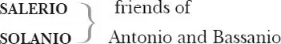

The Merchant of Venice
ANTONIO , a merchant of Venice
BASSANIO , his friend, suitor to Portia
LORENZO , friend of Antonio and Bassanio,in love with Jessica
GRATIANO , friend of Antonio and Bassanio

LEONARDO , servant to Bassanio
PORTIA , an heiress
NERISSA , her gentlewoman-in-waiting
BALTHASAR , servant to Portia
STEPHANO , servant to Portia
Prince of ARAGON , suitor to Portia
Prince of MOROCCO , suitor to Portia
SHYLOCK , a Jew of Venice
JESSICA , his daughter
TUBAL , a Jew, Shylock's friend
LANCELET GOBBO , the clown, servant to Shylock and later Bassanio
OLD GOBBO , Lancelet's father
DUKE of Venice
Magnificoes of Venice
A Jailer, Attendants and Servants
Act 1
Scene 1 1 / running scene 1
Enter Antonio, Salerio and Solanio
ANTONIO In sooth 2 I know not why I am so sad.
It wearies me, you say it wearies you;
But how I caught it, found it, or came by it,
What stuff 3 'tis made of, whereof it is born 4 ,
I am to learn 5 :
And such a want-wit 6 sadness makes of me
That I have much ado 7 to know myself.
SALERIO Your mind is tossing on 8 the ocean,
There where your argosies 9 with portly 10 sail 11
Like signiors 12 and rich burghers 13 on the flood 14 ,
Or as it were the pageants 15 of the sea,
Do overpeer 16 the petty traffickers 17
That curtsy 18 to them, do them reverence 19 ,
As they fly 20 by them with their woven wings 21 .
SOLANIO Believe me, sir, had I such venture 22 forth 23 ,
The better part 24 of my affections 25 would
Be with my hopes 26 abroad. I should be still 27
Plucking the grass to know where sits 28 the wind,
Peering in maps for ports and piers and roads 29 ,
And every object that might make me fear
Misfortune to my ventures out of doubt
Would make me sad.
SALERIO My wind cooling my broth
Would blow me to an ague 30 , when I thought
What harm a wind too great might do at sea.
I should 31 not see the sandy hour-glass run,
But I should think of shallows and of flats 32 ,
And see my wealthy Andrew 33 docked in sand,
Vailing 34 her high top 35 lower than her ribs 36
To kiss her burial 37 ; should I 38 go to church
And see the holy edifice of stone,
And not bethink me straight 39 of dang'rous rocks,
Which touching but 40 my gentle 41 vessel's side,
Would scatter all her spices on the stream 42 ,
Enrobe the roaring waters with my silks 43 ,
And in a word, but even 44 now worth this 45 ,
And now worth nothing? Shall I have the thought
To think on this, and shall I lack the thought
That such a thing bechanced 46 would make me sad?
But tell not me, I know, Antonio
Is sad to think upon his merchandise.
ANTONIO Believe me, no. I thank my fortune for it,
My ventures are not in one bottom 47 trusted,
Nor to one place; nor is my whole estate 48
Upon 49 the fortune 50 of this present year:
Therefore my merchandise makes me not sad.
SALERIO Why, then you are in love.
ANTONIO Fie 51 , fie!
SOLANIO Not in love neither: then let us say you are sad
Because you are not merry; and 'twere as easy
For you to laugh and leap, and say you are merry
Because you are not sad. Now, by two-headed Janus 52 ,
Nature hath framed 53 strange fellows in her time:
Some that will evermore peep 54 through their eyes
And laugh like parrots at a bagpiper 55 ,
And other 56 of such vinegar aspect 57
That they'll not show their teeth in way of smile,
Though 58 Nestor 59 swear the jest be laughable.
Enter Bassanio, Lorenzo and Gratiano 60
SOLANIO Here comes Bassanio, your most noble kinsman,
Gratiano and Lorenzo. Fare ye well,
We leave you now with better company.
SALERIO I would have stayed till I had made you merry,
If worthier friends had not prevented 61 me.
ANTONIO Your worth is very dear 62 in my regard 63 .
I take it your own business calls on you,
And you embrace 64 th'occasion 65 to depart.
SALERIO Good morrow, my good lords.
BASSANIO Good signiors both, when shall we laugh 66 ? Say, when?
You grow exceeding strange 67 . Must it be so?
SALERIO We'll make our leisures to attend on yours 68 .
Exeunt Salerio and Solanio
LORENZO My lord Bassanio, since you have found Antonio,
We two will leave you, but at dinnertime
I pray you have in mind 69 where we must meet.
BASSANIO I will not fail you.
GRATIANO You look not well, Signior Antonio.
You have too much respect upon the world 70 :
They lose it 71 that do buy it with much care 72 .
Believe me, you are marvellously 73 changed.
ANTONIO I hold 74 the world but as the world, Gratiano,
A stage where every man must play a part,
And mine a sad one.
GRATIANO Let me play the fool:
With mirth and laughter let old 75 wrinkles come,
And let my liver 76 rather heat with wine
Than my heart cool with mortifying 77 groans 78 .
Why should a man whose blood is warm within,
Sit like his grandsire 79 cut in alabaster 80 ?
Sleep when he wakes and creep into the jaundices 81
By being peevish 82 ? I tell thee what, Antonio —
I love thee, and it is my love that speaks —
There are a sort of men whose visages 83
Do cream and mantle 84 like a standing 85 pond,
And do a wilful 86 stillness 87 entertain 88 ,
With purpose to be dressed in an opinion 89
Of wisdom, gravity, profound conceit 90 ,
As who should say 91 , 'I am, sir, an oracle,
And when I ope 92 my lips, let no dog bark!'
O my Antonio, I do know of these
That therefore only are reputed wise
For saying nothing; when I am very sure
If they should speak, would almost damn those ears
Which, hearing them, would call their brothers fools 93 .
I'll tell thee more of this another time.
But fish not with this melancholy bait 94
For this fool 95 gudgeon 96 , this opinion.
Come, good Lorenzo. Fare ye well awhile,
I'll end my exhortation 97 after dinner.
LORENZO Well, we will leave you then till dinnertime.
To Antonio and Bassanio
I must be one of these same dumb 98 wise men,
For Gratiano never lets me speak.
GRATIANO Well, keep me company but two years more,
Thou shalt not know the sound of thine own tongue.
ANTONIO Fare you well, I'll grow 99 a talker for this gear 100 .
GRATIANO Thanks, i'faith, for silence is only commendable
In a neat's tongue dried 101 and a maid not vendible 102 .
Exit [Gratiano with Lorenzo ]
ANTONIO Is that anything now? 103
BASSANIO Gratiano speaks an infinite deal of nothing, more than any man in all Venice. His reasons 104 are two grains of wheat hid in two bushels of chaff: you shall seek all day ere 105 you find them, and when you have them, they are not worth the
search.
ANTONIO Well, tell me now, what lady is the same 106
To whom you swore a secret pilgrimage
That you today promised to tell me of ?
BASSANIO 'Tis not unknown to you, Antonio,
How much I have disabled 107 mine estate
By something 108 showing a more swelling port 109
Than my faint 110 means would grant continuance 111 .
Nor do I now make moan 112 to be abridged 113
From such a noble rate 114 , but my chief care 115
Is to come fairly off from 116 the great debts
Wherein my time 117 something too prodigal 118
Hath left me gaged 119 . To you, Antonio,
I owe the most in money and in love,
And from your love I have a warranty 120
To unburden 121 all my plots and purposes
How to get clear of all the debts I owe.
ANTONIO I pray you good Bassanio, let me know it,
And if it stand as you yourself still do,
Within the eye of honour 122 , be assured
My purse, my person, my extremest means,
Lie all unlocked to your occasions 123 .
BASSANIO In my schooldays, when I had lost one shaft 124 ,
I shot his fellow of the selfsame flight 125
The selfsame way with more advisèd 126 watch
To find the other forth 127 , and by adventuring 128 both
I oft found both. I urge 129 this childhood proof 130
Because what follows is pure innocence 131 .
I owe you much and, like a wilful youth,
That which I owe is lost. But if you please
To shoot another arrow that self 132 way
Which you did shoot the first, I do not doubt,
As I will watch the aim, or 133 to find both,
Or bring your latter hazard 134 back again,
And thankfully rest 135 debtor for the first.
ANTONIO You know me well, and herein spend but 136 time
To wind about my love with circumstance 137 ,
And out of 138 doubt you do me now more wrong
In making question of my uttermost 139
Than if you had made waste 140 of all I have.
Then do but 141 say to me what I should do
That in your knowledge may by me be done,
And I am pressed 142 unto it: therefore speak.
BASSANIO In Belmont is a lady richly left 143 ,
And she is fair and, fairer than that word,
Of wondrous virtues. Sometimes 144 from her eyes
I did receive fair speechless messages.
Her name is Portia, nothing undervalued
To 145 Cato 146 's daughter, Brutus 147 ' Portia.
Nor is the wide world ignorant of her worth,
For the four winds blow in from every coast
Renownèd suitors, and her sunny locks
Hang on her temples like a golden fleece 148 ,
Which makes her seat 149 of Belmont Colchos' strand 150 ,
And many Jasons come in quest of her.
O my Antonio, had I but the means
To hold a rival place with one of them,
I have a mind presages 151 me such thrift 152 ,
That I should questionless 153 be fortunate.
ANTONIO Thou know'st that all my fortunes are at sea,
Neither have I money, nor commodity 154
To raise a present 155 sum: therefore go forth.
Try 156 what my credit can in Venice do,
That shall be racked 157 , even to the uttermost,
To furnish thee 158 to Belmont, to fair Portia.
Go presently 159 inquire, and so will I,
Where money is, and I no question make
To have it of my trust 160 or for my sake 161 .
Exeunt
Scene 2 162 / running scene 2
Enter Portia with her waiting woman 163 , Nerissa
PORTIA By my troth 164 , Nerissa, my little body is aweary of this great world.
NERISSA You would be 165 , sweet madam, if your miseries were in the same abundance as your good fortunes are, and yet, for aught 166 I see, they are as sick that surfeit 167 with too much, as they that starve with nothing; it is no small happiness, therefore, to be seated in the mean 168 . Superfluity 169 comes sooner by 170 white hairs, but competency 171 lives longer.
PORTIA Good sentences 172 and well pronounced 173 .
NERISSA They would be better if well followed.
PORTIA If to do were as easy as to know what were good to do, chapels had been churches and poor men's cottages princes' palaces. It is a good divine 174 that follows his own instructions; I can easier teach twenty what were good to be done than be one of the twenty to follow mine own teaching. The brain may devise laws for the blood 175 , but a hot temper 176 leaps o'er a cold decree 177 — such a hare is madness the youth, to skip o'er the meshes 178 of good counsel the cripple; but this reason is not in fashion 179 to choose me a husband. O me, the word 'choose!' I may neither choose whom I would 180 , nor refuse whom I dislike, so is the will 181 of a living daughter curbed by the will 182 of a dead father. Is it not hard, Nerissa, that I cannot choose one nor refuse none?
NERISSA Your father was ever virtuous, and holy men at their death have good inspirations: therefore the lottery 183 that he hath devised in these three chests of gold, silver and lead, whereof who 184 chooses his meaning 185 chooses you, will no doubt never be chosen by any rightly 186 but one who you shall rightly love. But what warmth is there in your affection towards any of these princely suitors that are already come?
PORTIA I pray thee overname 187 them, and as thou namest them, I will describe them, and according to my description level at 188 my affection.
NERISSA First, there is the Neapolitan 189 prince.
PORTIA Ay, that's a colt 190 indeed, for he doth nothing but talk of his horse, and he makes it a great appropriation 191 to his own good parts 192 that he can shoe him himself. I am much afraid my lady his mother played false 193 with a smith 194 .
NERISSA Then is there the County 195 Palatine 196 .
PORTIA He doth nothing but frown, as who 197 should say, 'An 198 you will not have me, choose 199 .' He hears merry tales and smiles not. I fear he will prove 200 the weeping philosopher 201 when he grows old, being so full of unmannerly 202 sadness 203 in his youth. I had rather to be married to a death's-head 204 with a bone in his mouth than to either of these. God defend me from these two!
NERISSA How 205 say you by 206 the French lord, Monsieur Le Bon 207 ?
PORTIA God made him, and therefore let him pass for a man. In truth, I know it is a sin to be a mocker, but he! Why, he hath a horse better than the Neapolitan's, a better bad 208 habit of frowning than the Count Palatine. He is every man in no man 209 . If a throstle 210 sing, he falls straight 211 a capering 212 , he will fence with his own shadow. If I should marry him, I should marry twenty husbands. If he would despise me, I would forgive him, for if 213 he love me to madness, I should never requite him.
NERISSA What say 214 you then to Falconbridge, the young baron of England?
PORTIA You know I say nothing to him, for he understands not me, nor I him: he hath neither Latin, French, nor Italian, and you will come into the court and swear 215 that I have a poor pennyworth in the 216 English. He is a proper man's picture 217 , but alas, who can converse with a dumb show 218 ? How oddly he is suited 219 . I think he bought his doublet 220 in Italy, his round hose 221 in France, his bonnet 222 in Germany, and his behaviour everywhere.
NERISSA What think you of the other lord, his neighbour?
PORTIA That he hath a neighbourly charity in him, for he borrowed 223 a box of the ear of the Englishman and swore he would pay him again when he was able. I think the Frenchman became his surety 224 and sealed under 225 for another 226 .
NERISSA How like you the young German, the Duke of Saxony 227 's nephew?
PORTIA Very vilely in the morning when he is sober, and most vilely in the afternoon when he is drunk: when he is best, he is a little worse than a man, and when he is worst, he is little better than a beast 228 . An 229 the worst fall 230 that ever fell, I hope I shall make shift 231 to go without him.
NERISSA If he should offer to choose, and choose the right casket, you should 232 refuse to perform your father's will, if you should refuse to accept him.
PORTIA Therefore, for fear of the worst, I pray thee set a deep glass of Rhenish wine 233 on the contrary 234 casket, for if 235 the devil be within, and that temptation without 236 , I know he will choose it. I will do anything, Nerissa, ere I will be married to a sponge 237 .
NERISSA You need not fear, lady, the having any of these lords. They have acquainted me with their determinations 238 , which is indeed to return to their home, and to trouble you with no more suit 239 , unless you may be won by some other sort 240 than your father's imposition 241 , depending on the caskets.
PORTIA If I live to be as old as Sibylla 242 , I will die as chaste as Diana 243 , unless I be obtained by the manner of my father's will. I am glad this parcel 244 of wooers are so reasonable, for there is not one among them but I dote on his very absence, and I wish them a fair departure.
NERISSA Do you not remember, lady, in your father's time, a Venetian, a scholar and a soldier, that came hither in company of the Marquis of Montferrat 245 ?
PORTIA Yes, yes, it was Bassanio, as I think, so was he called.
NERISSA True, madam. He, of all the men that ever my foolish 246 eyes looked upon, was the best deserving a fair lady.
PORTIA I remember him well, and I remember him worthy of thy praise.
Enter a Servingman
SERVANT The four strangers 247 seek you, madam, to take their leave. And there is a forerunner 248 come from a fifth, the Prince of Morocco, who brings word the prince his master will be here tonight.
PORTIA If I could bid the fifth welcome with so good heart as I can bid the other four farewell, I should be glad of his approach. If he have the condition 249 of a saint and the complexion of a devil 250 , I had rather he should shrive me 251 than wive 252 me. Come, Nerissa.— Sirrah 253 , go before; whiles we shut the gate upon one wooer, another knocks at the door.
To the Servingman
Exeunt
Scene 3 254 / running scene 3
Enter Bassanio with Shylock 255 the Jew
SHYLOCK Three thousand ducats 256 , well.
BASSANIO Ay, sir, for three months.
SHYLOCK For three months, well.
BASSANIO For the which, as I told you, Antonio shall be bound 257 .
SHYLOCK Antonio shall become bound, well.
BASSANIO May you stead 258 me? Will you pleasure 259 me? Shall I know your answer?
SHYLOCK Three thousand ducats for three months and Antonio bound.
BASSANIO Your answer to that.
SHYLOCK Antonio is a good man.
BASSANIO Have you heard any imputation 260 to the contrary?
SHYLOCK Ho, no, no, no, no! My meaning in saying he is a good man is to have you understand me that he is sufficient 261 . Yet his means are in supposition 262 : he hath an argosy bound to Tripolis 263 , another to the Indies 264 , I understand moreover, upon the Rialto 265 , he hath a third at Mexico, a fourth for England, and other ventures he hath squandered 266 abroad. But ships are but boards, sailors but men. There be landrats and water-rats, water-thieves and land-thieves — I mean pirates 267 — and then there is the peril of waters, winds and rocks. The man is, notwithstanding 268 , sufficient. Three thousand ducats. I think I may take his bond.
BASSANIO Be assured 269 you may.
SHYLOCK I will be assured I may. And that I may be assured, I will bethink me 270 . May I speak with Antonio?
BASSANIO If it please you to dine with us.
SHYLOCK Yes, to smell pork, to eat of the habitation 271 which your prophet the Nazarite 272 conjured the devil into. I will buy with you, sell with you, talk with you, walk with you, and so following 273 , but I will not eat with you, drink with you, nor pray with you. What news on the Rialto? Who is he comes here?
Enter Antonio
BASSANIO This is Signior Antonio.
SHYLOCK How like a fawning publican 274 he looks!
Aside
I hate him for he is a Christian,
But more, for that in low simplicity 275
He lends out money gratis 276 and brings down
The rate of usance 277 here with us in Venice.
If I can catch him once upon the hip 278 ,
I will feed fat 279 the ancient grudge I bear him.
He hates our sacred nation 280 , and he rails 281 —
Even there where merchants most do congregate 282 —
On me, my bargains and my well-won thrift 283 ,
Which he calls interest. Cursèd be my tribe 284 ,
If I forgive him!
BASSANIO Shylock, do you hear?
SHYLOCK I am debating of my present store 285 ,
And by the near guess of my memory,
I cannot instantly raise up the gross 286
Of full three thousand ducats. What of that?
Tubal 287 , a wealthy Hebrew of my tribe,
Will furnish 288 me; but soft 289 ! How many months
Do you desire?— Rest you fair 290 , good signior.
To Antonio
Your worship was the last man in our mouths 291 .
ANTONIO Shylock, albeit I neither lend nor borrow
By taking nor by giving of excess 292 ,
Yet to supply the ripe wants 293 of my friend,
I'll break a custom.— Is he yet possessed 294
To Bassanio
How much ye would 295 ?
SHYLOCK Ay, ay, three thousand ducats.
ANTONIO And for three months.
SHYLOCK I had forgot — three months — you told me so.
Well then, your bond 296 . And let me see, but hear you,
Methoughts you said you neither lend nor borrow
Upon advantage 297 .
ANTONIO I do never use 298 it.
SHYLOCK When Jacob grazed his uncle Laban's sheep 299 —
This Jacob from 300 our holy Abram 301 was,
As his wise mother wrought 302 in his behalf,
The third possessor 303 ; ay, he was the third—
ANTONIO And what of him? Did he take interest?
SHYLOCK No, not take interest, not, as you would say,
Directly interest. Mark 304 what Jacob did:
When Laban and himself were compromised 305
That all the eanlings 306 which were streaked and pied 307
Should fall as 308 Jacob's hire 309 , the ewes, being rank 310 ,
In end of autumn turnèd to the rams,
And, when the work of generation 311 was
Between these woolly breeders in the act,
The skilful shepherd peeled me certain wands 312 ,
And in the doing of the deed of kind 313 ,
He stuck them up before the fulsome 314 ewes 315 ,
Who then conceiving, did in eaning 316 time
Fall 317 parti-coloured lambs, and those were Jacob's.
This was a way to thrive 318 , and he was blest:
And thrift is blessing, if men steal it not.
ANTONIO This was a venture 319 , sir, that Jacob served 320 for,
A thing not in his power to bring to pass,
But swayed and fashioned 321 by the hand of heaven.
Was this inserted 322 to make interest good 323 ?
Or is your gold and silver ewes and rams?
SHYLOCK I cannot tell, I make it breed as fast.
But note me, signior—
ANTONIO Mark you this, Bassanio,
The devil can cite Scripture for his purpose.
An evil soul producing holy witness
Is like a villain with a smiling cheek,
A goodly 324 apple rotten at the heart.
O, what a goodly outside falsehood hath!
SHYLOCK Three thousand ducats, 'tis a good round sum.
Three months from twelve, then let me see, the rate—
ANTONIO Well, Shylock, shall we be beholding 325 to you?
SHYLOCK Signior Antonio, many a time and oft
In the Rialto you have rated 326 me
About my moneys and my usances.
Still have I borne it with a patient shrug,
For sufferance 327 is the badge of all our tribe.
You call me misbeliever, cut-throat dog,
And spit upon my Jewish gaberdine 328 ,
And all for use 329 of that which is mine own.
Well then, it now appears you need my help.
Go to 330 , then. You come to me and you say
'Shylock, we would have moneys' — you say so,
You that did void 331 your rheum 332 upon my beard,
And foot 333 me as you spurn 334 a stranger cur 335
Over your threshold. Moneys is your suit 336 .
What should I say to you? Should I not say,
'Hath a dog money? Is it possible
A cur should lend three thousand ducats?' Or
Shall I bend low and in a bondman's key 337 ,
With bated 338 breath and whisp'ring humbleness,
Say this: 'Fair sir, you spat on me on Wednesday last;
You spurned me such a day; another time
You called me dog, and for these courtesies
I'll lend you thus much moneys'?
ANTONIO I am as like 339 to call thee so again,
To spit on thee again, to spurn thee too.
If thou wilt lend this money, lend it not
As to thy friends, for when did friendship take
A breed of barren 340 metal 341 of 342 his friend?
But lend it rather to thine enemy,
Who, if he break 343 , thou mayst with better 344 face
Exact the penalties.
SHYLOCK Why, look you how you storm!
I would be friends with you and have your love,
Forget the shames that you have stained me with,
Supply your present wants and take no doit 345
Of usance for my moneys, and you'll not hear me:
This is kind 346 I offer.
BASSANIO This were 347 kindness.
SHYLOCK This kindness will I show:
Go with me to a notary 348 , seal me there
Your single 349 bond, and in a merry sport
If you repay me not on such a day,
In such a place, such sum or sums as are
Expressed in the condition 350 , let the forfeit
Be nominated for 351 an equal 352 pound
Of your fair flesh, to be cut off and taken
In what part of your body it pleaseth me.
ANTONIO Content, in faith, I'll seal to such a bond
And say there is much kindness in the Jew.
BASSANIO You shall not seal to such a bond for me.
I'll rather dwell 353 in my necessity 354 .
ANTONIO Why, fear not, man, I will not forfeit it.
Within these two months — that's a month before
This bond expires — I do expect return
Of thrice three times the value of this bond.
SHYLOCK O father Abram, what these Christians are,
Whose own hard dealings teaches them suspect 355
The thoughts of others! Pray you tell me this:
If he should break his day 356 , what should I gain
By the exaction 357 of the forfeiture?
A pound of man's flesh taken from a man
Is not so estimable 358 , profitable neither,
As flesh of muttons, beefs or goats. I say
To buy his favour, I extend this friendship:
If he will take it, so 359 , if not, adieu.
And for my love, I pray you wrong me not.
ANTONIO Yes Shylock, I will seal unto this bond.
SHYLOCK Then meet me forthwith 360 at the notary's,
Give him direction 361 for this merry bond,
And I will go and purse 362 the ducats straight,
See 363 to my house, left in the fearful 364 guard
Of an unthrifty 365 knave 366 , and presently 367
I'll be with you.
Exit
ANTONIO Hie 368 thee, gentle 369 Jew.
This Hebrew will turn Christian, he grows kind 370 .
BASSANIO I like not fair terms and a villain's mind.
ANTONIO Come on, in this there can be no dismay.
My ships come home a month before the day.
Exeunt
Act 2
Scene 1 371 / running scene 4
Enter Morocco, a tawny 372 Moor 373 , all in white, and three or four followers accordingly, with Portia, Nerissa and their train. Flourish 374 cornets
MOROCCO Mislike me not for my complexion,
The shadowed livery 375 of the burnished 376 sun,
To whom I am a neighbour and near bred 377 .
Bring me the fairest creature northward born,
Where Phoebus 378 ' fire scarce thaws the icicles,
And let us make incision 379 for your love,
To prove whose blood is reddest 380 , his or mine.
I tell thee, lady, this aspect 381 of mine
Hath feared 382 the valiant. By my love I swear,
The best-regarded virgins of our clime 383
Have loved it too: I would not change this hue 384 ,
Except to steal your thoughts, my gentle queen.
PORTIA In terms of choice I am not solely led
By nice 385 direction 386 of a maiden's eyes.
Besides, the lott'ry of my destiny
Bars me the right of voluntary choosing.
But if my father had not scanted 387 me,
And hedged 388 me by his wit 389 to yield myself
His 390 wife who wins me by that means I told you,
Yourself, renownèd prince, then 391 stood as fair 392
As any comer I have looked on yet
For 393 my affection.
MOROCCO Even for that I thank you:
Therefore, I pray you lead me to the caskets
To try my fortune. By this scimitar 394
That slew the Sophy 395 and a Persian prince
That won three fields 396 of 397 Sultan Solyman 398 ,
I would o'erstare 399 the sternest eyes that look,
Outbrave the heart most daring on the earth,
Pluck the young sucking cubs from the she-bear,
Yea, mock the lion when he roars for prey
To win thee, lady. But alas the while!
If Hercules 400 and Lichas 401 play at dice
Which is the better man, the greater throw
May turn by fortune from the weaker hand:
So is Alcides 402 beaten by his page,
And so may I, blind fortune leading me,
Miss that which one unworthier may attain,
And die with grieving.
PORTIA You must take your chance,
And either not attempt to choose at all
Or swear before you choose, if you choose wrong
Never to speak to lady afterward
In way of marriage: therefore be advised 403 .
MOROCCO Nor will not 404 . Come, bring me unto my chance.
PORTIA First, forward to the temple. After dinner
Your hazard 405 shall be made.
MOROCCO Good fortune then!
To make me blest or cursed'st among men.
Cornets [and ] exeunt
Scene 2 406 / running scene 5
Enter the Clown 407 [Lancelet 408 ] alone
LANCELET Certainly my conscience will serve 409 me to run from this Jew my master. The fiend is at mine elbow and tempts me, saying to me, 'Gobbo 410 , Lancelet Gobbo, good Lancelet', or 'Good Gobbo', or 'Good Lancelet Gobbo, use your legs, take the start 411 , run away.' My conscience says, 'No; take heed, honest Lancelet, take heed, honest Gobbo', or, as aforesaid, 'Honest Lancelet Gobbo, do not run, scorn running with thy heels 412 .' Well, the most courageous 413 fiend bids me pack 414 : 'Fia! 415 ' says the fiend, 'Away!' says the fiend, 'For the heavens 416 , rouse up a brave mind', says the fiend, 'and run.' Well, my conscience, hanging about the neck of my heart, says very wisely to me, 'My honest 417 friend Lancelet, being an honest man's son', or rather an honest woman's son — for indeed my father did something 418 smack 419 , something grow to 420 , he had a kind of taste 421 — well, my conscience says 'Lancelet, budge not.' 'Budge', says the fiend. 'Budge not', says my conscience. 'Conscience,' say I, 'you counsel well.' 'Fiend,' say I, 'you counsel well.' To be ruled by my conscience, I should stay with the Jew my master, who, God bless the mark 422 , is a kind of devil; and to run away from the Jew, I should be ruled by the fiend, who, saving your reverence 423 , is the devil himself. Certainly the Jew is the very devil incarnation 424 , and in my conscience, my conscience is a kind of hard conscience to offer to counsel me to stay with the Jew; the fiend gives the more friendly counsel. I will run, fiend. My heels are at your commandment. I will run.
Enter Old Gobbo, with a basket
GOBBO Master young man, you, I pray you which is the way to Master Jew's?
LANCELET O heavens, this is my true-begotten 425 father, who, being more than sand-blind 426 , high-gravel-blind 427 , knows me not. I will try confusions 428 with him.
Aside
GOBBO Master young gentleman, I pray you which is the way to Master Jew's?
LANCELET Turn upon your right hand at the next turning, but at the next turning of all, on your left; marry, at the very next turning, turn of no hand 429 , but turn down indirectly 430 to the Jew's house.
GOBBO By God's sonties 431 , 'twill be a hard way to hit 432 . Can you tell me whether one Lancelet, that dwells with him, dwell with him or no?
LANCELET Talk you of young Master Lancelet?— Mark me now, now will I raise the waters 433 .— Talk you of young Master Lancelet?
Aside
GOBBO No master 434 , sir, but a poor man's son. His father, though I say't, is an honest exceeding poor man and, God be thanked, well to live 435 .
LANCELET Well, let his father be what a 436 will, we talk of young Master Lancelet.
GOBBO Your worship's friend and Lancelet 437 .
LANCELET But I pray you ergo 438 , old man, ergo , I beseech you talk you of young Master Lancelet?
GOBBO Of Lancelet, an't 439 please your mastership.
LANCELET Ergo , Master Lancelet. Talk not of Master Lancelet, father 440 , for the young gentleman — according to fates and destinies and such odd sayings, the Sisters Three 441 and such branches of learning — is indeed deceased, or as you would say in plain terms, gone to heaven.
GOBBO Marry, God forbid! The boy was the very staff of my age, my very prop.
LANCELET Do I look like a cudgel or a hovel-post 442 , a staff or a prop? Do you know me, father?
GOBBO Alack the day, I know you not, young gentleman, but I pray you tell me, is my boy, God rest his soul, alive or dead?
LANCELET Do you not know me, father?
GOBBO Alack, sir, I am sand-blind. I know you not.
LANCELET Nay, indeed if you had your eyes you might fail of the knowing 443 me: it is a wise father that knows his own child 444 . Well, old man, I will tell you news of your son. Give me your blessing. Truth will come to light, murder cannot be 445 hid long, a man's son may, but in the end truth will out.
He kneels
GOBBO Pray you, sir, stand up. I am sure you are not Lancelet, my boy.
LANCELET Pray you let's have no more fooling about it, but give me your blessing. I am Lancelet, your boy that was, your son that is, your child that shall be.
GOBBO I cannot think you are my son.
LANCELET I know not what I shall think of that. But I am Lancelet, the Jew's man, and I am sure Margery 446 your wife is my mother.
GOBBO Her name is Margery, indeed. I'll be sworn, if thou be Lancelet, thou art mine own flesh and blood. Lord worshipped might he be! What a beard hast thou got! Thou hast got more hair on thy chin than Dobbin my fill-horse 447 has on his tail.
LANCELET It should seem, then, that Dobbin's tail grows backward 448 . I am sure he had more hair of his tail than I have of 449 my face when I last saw him.
He rises
GOBBO Lord, how art thou changed! How dost thou and thy master agree 450 ? I have brought him a present. How 'gree you now?
LANCELET Well, well. But for mine own part, as I have set up my rest 451 to run away, so I will not rest 452 till I have run some ground; my master's a very 453 Jew. Give him a present? Give him a halter 454 ! I am famished in his service. You may tell 455 every finger I have with my ribs 456 . Father, I am glad you are come. Give me 457 your present to one Master Bassanio, who, indeed, gives rare 458 new liveries 459 . If I serve not him, I will run as far as God has any ground. O rare fortune! Here comes the man. To him, father, for I am a Jew 460 if I serve the Jew any longer.
Enter Bassanio, with a follower or two [including Leonardo ]
BASSANIO You may do so, but let it be so hasted 461 that supper be ready at the farthest 462 by five of the clock. See these letters delivered, put the liveries to making, and desire Gratiano to come anon 463 to my lodging.
To a Servant
[Exit a Servant ]
LANCELET To him, father.
GOBBO God bless your worship!
Comes forward
BASSANIO Gramercy 464 ! Wouldst thou aught 465 with me?
GOBBO Here's my son, sir, a poor 466 boy—
LANCELET Not a poor boy, sir, but the rich Jew's man, that would, sir, as my father shall specify—
GOBBO He hath a great infection 467 , sir, as one would say, to serve—
LANCELET Indeed, the short and the long is, I serve the Jew and have a desire, as my father shall specify—
GOBBO His master and he, saving your worship's reverence, are scarce 468 cater-cousins 469 —
LANCELET To be brief, the very truth is that the Jew, having done me wrong, doth cause me, as my father, being, I hope, an old man, shall frutify 470 unto you—
GOBBO I have here a dish of doves that I would bestow upon your worship, and my suit is—
LANCELET In very brief, the suit is impertinent 471 to myself, as your worship shall know by this honest old man, and though I say it, though old man, yet poor man, my father.
BASSANIO One speak for both. What would you?
LANCELET Serve you, sir.
GOBBO That is the very defect 472 of the matter, sir.
BASSANIO I know thee well, thou hast obtained thy suit.
Shylock thy master spoke with me this day,
And hath preferred 473 thee, if it be preferment
To leave a rich Jew's service, to become
The follower of so poor a gentleman.
LANCELET The old proverb 474 is very well parted 475 between my master Shylock and you, sir: you have the grace of God, sir, and he hath enough.
BASSANIO Thou speak'st it well. Go, father, with thy son.
Take leave of thy old master and inquire
My lodging out 476 .— Give him a livery
To a Servant
More guarded 477 than his fellows'. See it done.
LANCELET Father, in. I cannot get a service, no. I have ne'er a tongue in my head. Well, if any man in Italy have a fairer table 478 which doth offer to swear upon a book 479 , I shall have good fortune. Go to, here's a simple 480 line of life 481 , here's a small trifle 482 of wives. Alas, fifteen wives is nothing! Eleven widows and nine maids is a simple 483 coming-in 484 for one man, and then to scape 485 drowning thrice, and to be in peril of my life with the edge of a feather-bed 486 . Here are simple scapes 487 . Well, if Fortune be a woman, she's a good wench for this gear 488 . Father, come; I'll take my leave of the 489 Jew in the twinkling.
Points to his palm
Exit Clown [Lancelet with Old Gobbo ]
BASSANIO I pray thee good Leonardo, think on this.
Gives a list
These things being bought and orderly bestowed 490 ,
Return in haste, for I do feast 491 tonight
My best-esteemed acquaintance. Hie thee, go.
LEONARDO My best endeavours shall be done herein 492 .
Enter Gratiano
GRATIANO Where's your master?
LEONARDO Yonder, sir, he walks.
Exit
GRATIANO Signior Bassanio!
BASSANIO Gratiano!
GRATIANO I have a suit to you.
BASSANIO You have obtained it 493 .
GRATIANO You must not deny me. I must go with you to Belmont.
BASSANIO Why then you must. But hear thee, Gratiano,
Thou art too wild, too rude 494 and bold of voice,
Parts 495 that become 496 thee happily enough
And in such eyes as ours appear not faults;
But where they are not known, why, there they show 497
Something too liberal 498 . Pray thee take pain 499
To allay 500 with some cold drops of modesty 501
Thy skipping 502 spirit, lest through thy wild behaviour
I be misconstered 503 in the place I go to,
And lose my hopes.
GRATIANO Signior Bassanio, hear me:
If I do not put on a sober habit 504 ,
Talk with respect and swear but 505 now and then,
Wear prayer-books in my pocket, look demurely,
Nay more, while grace is saying 506 , hood mine eyes
Thus with my hat, and sigh and say 'Amen',
Covers his face
Use all the observance of civility,
Like one well studied in a sad ostent 507
To please his grandam 508 , never trust me more.
BASSANIO Well, we shall see your bearing.
GRATIANO Nay, but I bar 509 tonight. You shall not gauge 510 me
By what we do tonight.
BASSANIO No, that were pity.
I would entreat you rather to put on
Your boldest suit of mirth, for we have friends
That purpose 511 merriment. But fare you well.
I have some business.
GRATIANO And I must to Lorenzo and the rest,
But we will visit you at suppertime.
Exeunt
Scene 3 / running scene 6
Enter Jessica 512 and the Clown [Lancelet ]
JESSICA I am sorry thou wilt leave my father so.
Our house is hell, and thou, a merry devil,
Didst rob it of some taste of tediousness;
But fare thee well. There is a ducat for thee.
Gives money
And, Lancelet, soon at supper shalt thou see
Lorenzo, who is thy new master's guest:
Give him this letter. Do it secretly.
Gives a letter
And so farewell. I would not have my father
See me talk with thee.
LANCELET Adieu! Tears exhibit 513 my tongue, most beautiful pagan, most sweet Jew! If a Christian did not play the knave and get 514 thee, I am much deceived; but adieu. These foolish drops do somewhat drown my manly spirit. Adieu.
Exit
JESSICA Farewell, good Lancelet.
Alack, what heinous sin is it in me
To be ashamed to be my father's child!
But though I am a daughter to his blood,
I am not to his manners 515 . O Lorenzo,
If thou keep promise, I shall end this strife 516 ,
Become a Christian and thy loving wife.
Exit
Scene 4 / running scene 7
Enter Gratiano, Lorenzo, Salerio and Solanio
LORENZO Nay, we will slink away in 517 suppertime,
Disguise us at my lodging and return
All in an hour.
GRATIANO We have not made good preparation.
SALERIO We have not spoke us yet of 518 torchbearers.
SOLANIO 'Tis vile 519 , unless it may be quaintly 520 ordered 521 ,
And better in my mind not undertook.
LORENZO 'Tis now but four of clock. We have two hours
To furnish us 522 .— Friend Lancelet, what's the news?
Enter Lancelet, with a letter
LANCELET An 523 it shall please you to break up this 524 , shall it seem to signify 525 .
Gives him the letter
LORENZO I know the hand 526 . In faith, 'tis a fair hand 527 ,
And whiter than the paper it writ on
Is the fair hand that writ.
GRATIANO Love-news, in faith.
LANCELET By your leave 528 , sir.
Starts to leave
LORENZO Whither goest thou?
LANCELET Marry, sir, to bid my old master the Jew to sup 529 tonight with my new master the Christian.
LORENZO Hold here, take this. Tell gentle Jessica
Gives money
I will not fail her. Speak it privately.
Go 530 , gentlemen,
Will you prepare you for this masque 531 tonight?
I am provided of 532 a torchbearer.
Exit Clown [Lancelet ]
SALERIO Ay, marry, I'll be gone about it straight.
SOLANIO And so will I.
LORENZO Meet me and Gratiano
At Gratiano's lodging some 533 hour hence.
SALERIO 'Tis good we do so.
Exit [Salerio with Solanio ]
GRATIANO Was not that letter from fair Jessica?
LORENZO I must needs 534 tell thee all. She hath directed 535
How I shall take her from her father's house,
What gold and jewels she is furnished with,
What page's suit she hath in readiness.
If e'er the Jew her father come to heaven,
It will be for his gentle 536 daughter's sake;
And never dare misfortune cross her foot 537 ,
Unless she 538 do it under this excuse,
That she 539 is issue 540 to a faithless 541 Jew.
Come, go with me, peruse this as thou goest.
Gives the letter
Fair Jessica shall be my torchbearer.
Exeunt
Scene 5 / running scene 8
Enter [Shylock the ] Jew and [Lancelet, ] his man that was, the Clown
SHYLOCK Well, thou shall see, thy eyes shall be thy judge,
The difference of 542 old Shylock and Bassanio.—
What, Jessica! — Thou shalt not gormandize 543
As thou hast done with me— What, Jessica!—
And sleep and snore, and rend apparel out 544 —
Why, Jessica, I say!
LANCELET Why, Jessica!
SHYLOCK Who bids thee call? I do not bid thee call.
LANCELET Your worship was wont 545 to tell me
I could do nothing without bidding.
Enter Jessica
JESSICA Call you? What is your will?
SHYLOCK I am bid forth 546 to supper, Jessica.
There are my keys. But wherefore 547 should I go?
I am not bid for love, they flatter me.
But yet I'll go in hate, to feed upon 548
The prodigal 549 Christian. Jessica, my girl,
Look to 550 my house. I am right loath 551 to go.
There is some ill 552 a-brewing towards my rest,
For I did dream of money-bags tonight 553 .
LANCELET I beseech you, sir, go. My young master doth expect 554 your reproach 555 .
SHYLOCK So do I his.
LANCELET An they have conspired together. I will not say you shall see a masque, but if you do, then it was not for nothing that my nose fell a-bleeding 556 on Black Monday 557 last at six o'clock i'th'morning, falling out that year on Ash Wednesday was four year, in th'afternoon 558 .
SHYLOCK What, are there masques? Hear you me, Jessica:
Lock up my doors, and when you hear the drum
And the vile squealing of the wry-necked 559 fife,
Clamber not you up to the casements 560 then,
Nor thrust your head into the public street
To gaze on Christian fools with varnished faces 561 ,
But stop 562 my house's ears, I mean my casements.
Let not the sound of shallow fopp'ry 563 enter
My sober house. By Jacob's staff 564 , I swear,
I have no mind of 565 feasting forth 566 tonight,
But I will go. Go you before me, sirrah,
Say I will come.
LANCELET I will go before, sir.— Mistress, look out at window, for 567 all this,
Aside to Jessica
There will come a Christian by,
Will be worth a Jewès eye 568 .
[Exit Lancelet ]
SHYLOCK What says that fool of Hagar's offspring 569 , ha?
JESSICA His words were 'Farewell mistress', nothing else.
SHYLOCK The patch 570 is kind enough, but a huge feeder,
Snail-slow in profit 571 , but he sleeps by day
More than the wild-cat. Drones 572 hive 573 not with me:
Therefore I part with him, and part with him
To one that I would have him help to waste
His borrowed purse. Well, Jessica, go in.
Perhaps I will return immediately.
Do as I bid you, shut doors after you.
Fast bind, fast find 574 —
A proverb never stale in thrifty mind.
Exit
JESSICA Farewell, and if my fortune be not crossed 575 ,
I have a father, you a daughter lost.
Exit
Scene 6 / running scene 9
Enter the masquers, Gratiano and Salerio
GRATIANO This is the penthouse 576 under which Lorenzo
Desired us to make a stand 577 .
SALERIO His hour is almost past 578 .
GRATIANO And it is marvel 579 he out-dwells his hour 580 ,
For lovers ever 581 run before the clock 582 .
SALERIO O, ten times faster Venus' pigeons 583 fly
To seal love's bonds new-made, than they are wont
To keep obligèd 584 faith unforfeited 585 !
GRATIANO That ever 586 holds 587 : who riseth from a feast
With that 588 keen appetite that he sits down?
Where is the horse that doth untread 589 again
His tedious measures 590 with the unbated fire 591
That he did pace them first? All things that are,
Are with more spirit chasèd than enjoyed.
How like a younger 592 or a prodigal
The scarfèd bark 593 puts from 594 her native bay,
Hugged and embracèd by the strumpet 595 wind!
How like a prodigal doth she return,
With over-withered ribs 596 and ragged sails,
Lean, rent 597 and beggared 598 by the strumpet wind!
Enter Lorenzo
SALERIO Here comes Lorenzo. More of this hereafter.
LORENZO Sweet friends, your 599 patience for my long abode 600 :
Not I but my affairs have made you wait.
When you shall please to play the thieves for wives,
I'll watch 601 as long for you then. Approach.
Here dwells my father 602 Jew. Ho! Who's within?
[Enter ] Jessica above [in boy's clothes ]
JESSICA Who are you? Tell me, for more certainty,
Albeit I'll swear that I do know your tongue 603 .
LORENZO Lorenzo, and thy love.
JESSICA Lorenzo, certain, and my love indeed,
For who love I so much? And now who knows
But you, Lorenzo, whether I am yours?
LORENZO Heaven and thy thoughts are witness that thou art.
JESSICA Here, catch this casket, it is worth the pains.
I am glad 'tis night, you do not look on me,
For I am much ashamed of my exchange 604 .
But love is blind and lovers cannot see
The pretty 605 follies that themselves commit,
For if they could, Cupid 606 himself would blush
To see me thus transformèd to a boy.
LORENZO Descend, for you must be my torchbearer.
JESSICA What, must I hold a candle to 607 my shames?
They in themselves, good sooth 608 , are too too light 609 .
Why, 'tis an office of discovery 610 , love,
And I should be obscured.
LORENZO So you are, sweet,
Even in the lovely garnish 611 of a boy.
But come at once,
For the close 612 night doth play the runaway 613 ,
And we are stayed for 614 at Bassanio's feast.
JESSICA I will make fast 615 the doors and gild 616 myself
With some more ducats, and be with you straight.
[Exit above ]
GRATIANO Now, by my hood, a gentle 617 and no Jew.
LORENZO Beshrew 618 me but I love her heartily.
For she is wise, if I can judge of her,
And fair she is, if that mine eyes be true 619 ,
And true 620 she is, as she hath proved herself,
And therefore, like herself, wise, fair and true,
Shall she be placèd in my constant soul.
Enter Jessica [below ]
What, art thou come? On, gentlemen, away!
Our masquing mates by this time for us stay 621 .
Exit [with Jessica and Salerio ]
Enter Antonio
ANTONIO Who's there?
GRATIANO Signior Antonio?
ANTONIO Fie, fie, Gratiano! Where are all the rest?
'Tis nine o'clock: our friends all stay for you.
No masque tonight, the wind is come about 622 .
Bassanio presently will go aboard.
I have sent twenty out to seek for you.
GRATIANO I am glad on't. I desire no more delight
Than to be under sail and gone tonight.
Exeunt
Scene 7 623 / running scene 10
[Flourish of cornets. ] Enter Portia with [the Prince of ] Morocco and both their trains 624
PORTIA Go, draw aside the curtains and discover 625
The several 626 caskets to this noble prince.
Now make your choice.
The curtains are opened
MOROCCO The first, of gold, who 627 this inscription bears:
'Who 628 chooseth me shall gain what many men desire.'
The second, silver, which this promise carries,
'Who chooseth me shall get as much as he deserves.'
This third, dull 629 lead, with warning all as blunt 630 ,
'Who chooseth me must give and hazard all he hath.'
How shall I know if I do choose the right?
PORTIA The one of them contains my picture, prince.
If you choose that, then I am yours withal 631 .
MOROCCO Some god direct my judgement! Let me see.
I will survey the inscriptions back 632 again.
What says this leaden casket?
'Who chooseth me must give and hazard all he hath.'
Must give: for what? For lead? Hazard for lead?
This casket threatens. Men that hazard all
Do it in hope of fair advantages:
A golden mind stoops not to shows of dross 633 ,
I'll then nor 634 give nor hazard aught for lead.
What says the silver with her virgin hue 635 ?
'Who chooseth me shall get as much as he deserves.'
As much as he deserves; pause there, Morocco,
And weigh 636 thy value with an even 637 hand:
If thou be'st rated 638 by thy estimation 639 ,
Thou dost deserve enough, and yet enough
May not extend so far as to the lady.
And yet to be afeard of my deserving
Were but a weak disabling 640 of myself.
As much as I deserve? Why, that's the lady.
I do in birth deserve her, and in fortunes,
In graces and in qualities of breeding,
But more than these, in love I do deserve.
What if I strayed no further, but chose here?
Let's see once more this saying graved 641 in gold:
'Who chooseth me shall gain what many men desire.'
Why, that's the lady, all the world desires her.
From the four corners of the earth they come,
To kiss this shrine, this mortal breathing 642 saint.
The Hyrcanian deserts 643 and the vasty 644 wilds
Of wide Arabia are as throughfares now
For princes to come view fair Portia.
The watery kingdom 645 , whose ambitious head 646
Spits in the face of heaven, is no bar
To stop the foreign spirits 647 , but they come,
As o'er a brook, to see fair Portia.
One of these three contains her heavenly picture.
Is't like 648 that lead contains her? 'Twere damnation
To think so base 649 a thought, it were too gross 650
To rib 651 her cerecloth 652 in the obscure 653 grave.
Or shall I think in silver she's immured 654 ,
Being ten times undervalued to 655 trièd 656 gold?
O sinful thought! Never so rich a gem
Was set 657 in worse than gold! They have in England
A coin that bears the figure of an angel 658
Stamped in gold, but that's insculped 659 upon,
But here an angel in a golden bed
Lies all within. Deliver me the key:
Here do I choose, and thrive I as I may!
PORTIA There, take it, prince, and if my form 660 lie there,
Then I am yours.
He unlocks the gold casket
MOROCCO O hell! What have we here?
A carrion 661 Death 662 , within whose empty eye
There is a written scroll; I'll read the writing.
'All that glisters is not gold,
Reads
Often have you heard that told;
Many a man his life hath sold
But 663 my outside to behold.
Gilded tombs do worms enfold.
Had you been as wise as bold,
Young in limbs, in judgement old 664 ,
Your answer had not been inscrolled 665 :
Fare you well, your suit is cold.'
Cold, indeed, and labour lost.
Then farewell, heat, and welcome, frost!
Portia, adieu. I have too grieved a heart
To take a tedious 666 leave. Thus losers part 667 .
Exit [with his train. Flourish of cornets ]
PORTIA A gentle riddance. Draw the curtains, go.
Let all of his complexion 668 choose me so.
[They close the curtains and ] exeunt
Scene 8 669 / running scene 11
Enter Salerio and Solanio
SALERIO Why, man, I saw Bassanio under sail.
With him is Gratiano gone along;
And in their ship I am sure Lorenzo is not.
SOLANIO The villain Jew with outcries raised 670 the duke,
Who went with him to search Bassanio's ship.
SALERIO He comes too late, the ship was under sail;
But there the duke was given to understand
That in a gondola were seen together
Lorenzo and his amorous Jessica.
Besides, Antonio certified the duke
They were not with Bassanio in his ship.
SOLANIO I never heard a passion 671 so confused,
So strange, outrageous 672 , and so variable,
As the dog Jew did utter in the streets:
'My daughter! O my ducats! O my daughter!
Fled with a Christian! O my Christian ducats!
Justice, the law, my ducats, and my daughter!
A sealèd bag, two sealèd bags of ducats,
Of double ducats 673 , stol'n from me by my daughter!
And jewels, two stones 674 , two rich and precious stones 675 ,
Stol'n by my daughter! Justice! Find the girl,
She hath the stones upon her, and the ducats.'
SALERIO Why, all the boys in Venice follow him,
Crying, his stones, his daughter, and his ducats.
SOLANIO Let good Antonio look 676 he keep his day 677 ,
Or he shall pay for this.
SALERIO Marry, well remembered.
I reasoned 678 with a Frenchman yesterday,
Who told me, in the narrow seas that part
The French and English 679 there miscarried 680
A vessel of our country richly fraught 681 .
I thought upon 682 Antonio when he told me,
And wished in silence that it were not his.
SOLANIO You were best to tell Antonio what you hear;
Yet do not suddenly, for it may grieve him.
SALERIO A kinder gentleman treads not the earth.
I saw Bassanio and Antonio part:
Bassanio told him he would make some speed
Of his return. He answered, 'Do not so,
Slubber 683 not business for my sake, Bassanio,
But stay 684 the very riping 685 of the time.
And for 686 the Jew's bond which he hath of me,
Let it not enter in your mind of 687 love.
Be merry, and employ your chiefest thoughts
To courtship and such fair ostents 688 of love
As shall conveniently become you 689 there.'
And even there 690 , his eye being big with tears,
Turning his face, he put his hand behind him,
And with affection wondrous sensible 691
He wrung Bassanio's hand, and so they parted.
SOLANIO I think he only loves the world for him 692 .
I pray thee let us go and find him out,
And quicken 693 his embracèd heaviness 694
With some delight or other.
SALERIO Do we so.
Exeunt
Scene 9 695 / running scene 12
Enter Nerissa and a Servitor 696
NERISSA Quick, quick, I pray thee draw the curtain straight 697 .
The Servitor opens the curtains
The Prince of Aragon 698 hath ta'en his oath,
And comes to his election 699 presently 700 .
Enter [the Prince of ] Aragon, his train and Portia. Flourish of cornets
PORTIA Behold, there stand the caskets, noble prince.
If you choose that wherein I am contained,
Straight shall our nuptial rites be solemnized.
But if thou fail, without more speech, my lord,
You must be gone from hence immediately.
ARAGON I am enjoined 701 by oath to observe three things:
First, never to unfold 702 to anyone
Which casket 'twas I chose; next, if I fail
Of 703 the right casket, never in my life
To woo a maid in way of marriage. Lastly,
If I do fail in fortune of my choice,
Immediately to leave you and be gone.
PORTIA To these injunctions everyone doth swear
That comes to hazard for my worthless self.
ARAGON And so have I addressed me 704 . Fortune 705 now
To my heart's hope! Gold, silver, and base lead.
'Who chooseth me must give and hazard all he hath.'
You shall look fairer, ere I give or hazard.
What says the golden chest? Ha? Let me see:
'Who chooseth me shall gain what many men desire.'
What many men desire — that 'many' may be meant
By 706 the fool 707 multitude that choose by show 708 ,
Not learning more than the fond 709 eye doth teach,
Which pries 710 not to th'interior, but like the martlet 711
Builds in 712 the weather on the outward wall,
Even in the force 713 and road 714 of casualty 715 .
I will not choose what many men desire,
Because I will not jump 716 with common spirits
And rank me with the barb'rous multitudes.
Why, then to thee, thou silver treasure-house.
Tell me once more what title thou dost bear:
'Who chooseth me shall get as much as he deserves.'
And well said too, for who shall go about
To cozen 717 fortune and be honourable
Without the stamp of merit? Let none presume
To wear an undeservèd dignity.
O, that estates, degrees 718 and offices 719
Were not derived corruptly, and that clear 720 honour
Were purchased 721 by the merit of the wearer!
How many then should cover that stand bare 722 !
How many be commanded that command!
How much low peasantry would then be gleaned 723
From the true seed 724 of honour! And how much honour
Picked from the chaff and ruin of the times
To be new-varnished 725 ! Well, but to my choice:
'Who chooseth me shall get as much as he deserves.'
I will assume desert 726 ; give me a key for this,
And instantly unlock my fortunes here.
He opens the silver casket
PORTIA Too long a pause for that which you find there.
Aside?
ARAGON What's here? The portrait of a blinking idiot
Presenting me a schedule 727 ! I will read it.
How much unlike art thou to Portia.
How much unlike my hopes and my deservings.
'Who chooseth me shall have as much as he deserves.'
Did I deserve no more than a fool's head?
Is that my prize? Are my deserts no better?
PORTIA To offend and judge are distinct offices
And of opposèd natures 728 .
ARAGON What is here?
'The fire seven times tried this 729 :
Reads
Seven times tried that judgement 730 is
That did never choose amiss 731 .
Some there be that shadows 732 kiss,
Such have but a shadow's bliss.
There be fools alive, iwis 733 ,
Silvered o'er 734 , and so was this.
Take what wife you will to bed,
I 735 will ever be your head.
So begone: you are sped 736 .'
Still more fool I shall appear
By the time 737 I linger here.
With one fool's head I came to woo,
But I go away with two.
Sweet, adieu. I'll keep my oath,
Patiently to bear my wroth 738 .
[Exeunt Aragon and train ]
PORTIA Thus hath the candle singed the moth.
O, these deliberate 739 fools! When they do choose,
They have the wisdom by their wit to lose.
NERISSA The ancient saying is no heresy:
Hanging and wiving 740 goes 741 by destiny.
PORTIA Come, draw the curtain, Nerissa.
Nerissa closes the curtains
Enter Messenger
MESSENGER Where is my lady?
PORTIA Here, what would my lord 742 ?
MESSENGER Madam, there is alighted at your gate
A young Venetian, one that comes before
To signify th'approaching of his lord,
From whom he bringeth sensible regreets 743 :
To wit 744 , besides commends 745 and courteous breath 746 ,
Gifts of rich value; yet 747 I have not seen
So likely an ambassador of love.
A day in April never came so sweet
To show how costly 748 summer was at hand,
As this fore-spurrer 749 comes before his lord.
PORTIA No more, I pray thee. I am half afeard
Thou wilt say anon he is some kin to thee,
Thou spend'st such high-day 750 wit in praising him.
Come, come, Nerissa, for I long to see
Quick Cupid's post 751 that comes so mannerly.
NERISSA Bassanio, Lord Love, if thy will it be!
Exeunt
Act 3
Scene 1 752 / running scene 13
Enter Solanio and Salerio
SOLANIO Now, what news on the Rialto?
SALERIO Why, yet it lives there unchecked 753 that Antonio hath a ship of rich lading 754 wrecked on the narrow seas 755 ; the Goodwins 756 , I think they call the place, a very dangerous flat 757 and fatal, where the carcasses of many a tall 758 ship lie buried, as they say, if my gossip 759 's report be an honest woman of her word.
SOLANIO I would she were as lying a gossip in that as ever knapped 760 ginger 761 or made her neighbours believe she wept for the death of a third husband. But it is true, without any slips of prolixity 762 or crossing 763 the plain highway of talk 764 , that the good Antonio, the honest Antonio — O that I had a title good enough to keep his name company!—
SALERIO Come, the full stop 765 .
SOLANIO Ha, what sayest thou? Why, the end is, he hath lost a ship.
SALERIO I would it might prove 766 the end of his losses.
SOLANIO Let me say 'amen' betimes 767 , lest the devil cross 768 my prayer, for here he comes in the likeness of a Jew. How now, Shylock! What news among the merchants?
Enter Shylock
SHYLOCK You knew, none so well, none so well as you, of my daughter's flight.
SALERIO That's certain. I, for my part, knew the tailor that made the wings 769 she flew withal.
SOLANIO And Shylock, for his own part, knew the bird was fledged 770 . and then it is the complexion 771 of them all to leave the dam 772 .
SHYLOCK She is damned for it.
SOLANIO That's certain, if the devil 773 may be her judge.
SHYLOCK My own flesh and blood 774 to rebel!
SOLANIO Out upon it 775 , old carrion 776 ! Rebels it at these years 777 ?
SHYLOCK I say, my daughter is my flesh and blood.
SALERIO There is more difference between thy flesh and hers than between jet and ivory 778 , more between your bloods than there is between red wine and Rhenish. But tell us, do you hear whether Antonio have had any loss at sea or no?
SHYLOCK There I have another bad match 779 : a bankrupt, a prodigal, who dare scarce show his head on the Rialto, a beggar that was used to come so smug upon the mart 780 . Let him look to 781 his bond. He was wont to call me usurer. Let him look to his bond. He was wont to lend money for a Christian courtesy 782 . Let him look to his bond.
SALERIO Why, I am sure if he forfeit, thou wilt not take his flesh. What's that good for?
SHYLOCK To bait fish withal. If it will feed nothing else, it will feed my revenge. He hath disgraced me, and hindered me 783 half a million, laughed at my losses, mocked at my gains, scorned my nation, thwarted my bargains, cooled 784 my friends, heated 785 mine enemies, and what's the reason? I am a Jew. Hath not a Jew eyes? Hath not a Jew hands, organs, dimensions 786 , senses, affections 787 , passions 788 ? Fed with the same food, hurt with the same weapons, subject to the same diseases, healed by the same means, warmed and cooled by the same winter and summer, as a Christian is? If you prick us, do we not bleed? If you tickle us, do we not laugh? If you poison us, do we not die? And if you wrong us, shall we not revenge? If we are like you in the rest, we will resemble you in that. If a Jew wrong a Christian, what is his humility 789 ? Revenge. If a Christian wrong a Jew, what should his sufferance 790 be by Christian example? Why, revenge. The villainy you teach me I will execute, and it shall go hard but 791 I will better the instruction 792 .
Enter a man from Antonio
SERVANT Gentlemen, my master Antonio is at his house and desires to speak with you both.
SALERIO We have been up and down 793 to seek him.
Enter Tubal
SOLANIO Here comes another of the tribe 794 . A third cannot be matched 795 , unless the devil himself turn Jew.
Exeunt Gentlemen [Solanio, Salerio and Servant ]
SHYLOCK How now, Tubal, what news from Genoa 796 ? Hast thou found my daughter?
TUBAL I often came where I did hear of her, but cannot find her.
SHYLOCK Why, there, there, there, there! A diamond gone, cost me two thousand ducats in Frankfurt 797 ! The curse 798 never fell upon our nation till now, I never felt it till now. Two thousand ducats in that, and other precious, precious jewels. I would my daughter were dead at my foot, and the jewels in her ear! Would she were hearsed 799 at my foot, and the ducats in her coffin! No news of them? Why, so — and I know not how much is spent in the search. Why, thou loss upon loss! The thief gone with so much, and so much to find the thief, and no satisfaction 800 , no revenge, nor no ill luck stirring but what lights 801 o'my shoulders, no sighs but o'my breathing, no tears but o'my shedding.
TUBAL Yes, other men have ill luck too. Antonio, as I heard in Genoa—
SHYLOCK What, what, what? Ill luck, ill luck?
TUBAL —hath an argosy cast away 802 , coming from Tripolis.
SHYLOCK I thank God, I thank God. Is it true, is it true?
TUBAL I spoke with some of the sailors that escaped the wreck.
SHYLOCK I thank thee, good Tubal, good news, good news! Ha, ha, heard in Genoa?
TUBAL Your daughter spent in Genoa, as I heard, one night fourscore 803 ducats.
SHYLOCK Thou stick'st a dagger in me. I shall never see my gold again. Fourscore ducats at a sitting 804 , fourscore ducats!
TUBAL There came divers 805 of Antonio's creditors in my company to Venice, that swear he cannot choose but break 806 .
SHYLOCK I am very glad of it. I'll plague him, I'll torture him. I am glad of it.
TUBAL One of 807 them showed me a ring that he had of your daughter for a monkey.
SHYLOCK Out upon her! 808 Thou torturest me, Tubal. It was my turquoise, I had it of Leah 809 when I was a bachelor. I would not have given it for a wilderness 810 of monkeys.
TUBAL But Antonio is certainly undone 811 .
SHYLOCK Nay, that's true, that's very true. Go, Tubal, fee 812 me an officer 813 , bespeak 814 him a fortnight before 815 . I will have the heart of him, if he forfeit, for were he out of Venice I can make what 816 merchandise 817 I will 818 . Go, Tubal, and meet me at our synagogue. Go, good Tubal, at our synagogue, Tubal.
Exeunt [separately ]
Scene 2 819 / running scene 14
Enter Bassanio, Portia, Gratiano, [Nerissa ] and all their trains
PORTIA I pray you tarry 820 . Pause a day or two
Before you hazard, for in choosing 821 wrong
I lose your company: therefore forbear 822 awhile.
There's something tells me, but it is not love,
I would not lose you, and you know yourself,
Hate counsels not in such a quality 823 ;
But lest you should not understand me well —
And yet a maiden hath no tongue but thought 824 —
I would detain you here some month or two
Before you venture 825 for me. I could teach you
How to choose right, but then I am forsworn 826 .
So 827 will I never be. So 828 may you miss me 829 .
But if you do, you'll make me wish a sin,
That I had been forsworn. Beshrew your eyes,
They have o'erlooked 830 me and divided me.
One half of me is yours, the other half yours,
Mine own, I would 831 say. But if mine, then yours,
And so all yours. O, these naughty 832 times
Puts bars 833 between the owners and their rights!
And so, though yours 834 , not yours. Prove it 835 so,
Let fortune go to hell for it, not I.
I speak too long, but 'tis to peise 836 the time,
To eke 837 it and to draw it out in length,
To stay 838 you from election 839 .
BASSANIO Let me choose,
For as I am, I live upon the rack 840 .
PORTIA Upon the rack, Bassanio? Then confess
What treason there is mingled with your love.
BASSANIO None but that ugly treason of mistrust 841 ,
Which makes me fear 842 the enjoying 843 of my love.
There may as well be amity and life
'Tween snow and fire, as 844 treason and my love.
PORTIA Ay, but I fear you speak upon the rack,
Where men enforcèd 845 do speak anything.
BASSANIO Promise me life, and I'll confess the truth.
PORTIA Well then, confess and live 846 .
BASSANIO 'Confess and love'
Had been the very sum of my confession.
O happy torment, when my torturer
Doth teach me answers for deliverance 847 !
But let me to 848 my fortune and the caskets.
PORTIA Away, then! I am locked in one of them.
If you do love me, you will find me out.
Nerissa and the rest, stand all aloof 849 .
Let music sound while he doth make his choice,
Then if he lose, he makes a swan-like end 850 ,
Fading in music. That the comparison
May stand more proper, my eye shall be the stream
And wat'ry death-bed for him. He may win,
And what is music then? Then music is
Even as the flourish 851 when true subjects bow
To a new-crownèd monarch. Such it is,
As are those dulcet 852 sounds in break of day,
That creep into the dreaming bridegroom's ear,
And summon him to marriage. Now he goes,
With no less presence 853 , but with much more love,
Than young Alcides 854 , when he did redeem
The virgin tribute paid by howling 855 Troy
To the sea-monster. I stand for 856 sacrifice,
The rest aloof are the Dardanian 857 wives,
With blearèd visages 858 , come forth to view
The issue 859 of th'exploit. Go, Hercules!
Live thou 860 , I live. With much, much more dismay
I view the fight than thou that mak'st the fray 861 .
Here music
A song the whilst Bassanio comments on the caskets to himself
[SINGER] Tell me where is fancy 862 bred,
Or 863 in the heart, or in the head?
How begot 864 , how nourishèd?
Reply, reply.
It is engendered in the eyes,
With gazing fed, and fancy dies
In the cradle 865 where it lies.
Let us all ring fancy's knell 866 .
I'll begin it — Ding, dong, bell.
ALL Ding, dong, bell.
BASSANIO So may the outward shows be least themselves 867 ,
The world is still 868 deceived with ornament.
In law, what plea so tainted and corrupt,
But, being seasoned with a gracious 869 voice,
Obscures the show of evil? In religion,
What damnèd error, but some sober brow 870
Will bless it and approve 871 it with a text 872 ,
Hiding the grossness 873 with fair ornament?
There is no vice so simple 874 but assumes 875
Some mark of virtue on his 876 outward parts;
How many cowards, whose hearts are all as false
As stairs of sand, wear yet upon their chins
The beards of Hercules and frowning Mars 877 ,
Who, inward searched 878 , have livers white as milk 879 .
And these assume but valour's excrement 880
To render them redoubted 881 . Look on beauty,
And you shall see 'tis purchased by the weight 882 ,
Which therein works a miracle in nature,
Making them lightest 883 that wear most of it:
So are those crispèd 884 snaky golden locks
Which makes such wanton 885 gambols with the wind
Upon supposèd fairness 886 , often known
To be the dowry of a second head,
The skull that bred them in the sepulchre 887 .
Thus ornament is but the guilèd 888 shore
To a most dangerous sea, the beauteous scarf
Veiling an Indian 889 beauty; in a word,
The seeming truth which cunning times put on
To entrap the wisest. Therefore, then, thou gaudy 890 gold,
Hard food for Midas 891 , I will none of thee;
Nor none of thee 892 , thou pale and common drudge 893
'Tween man and man. But thou, thou meagre lead,
Which rather threaten'st than dost promise aught,
Thy paleness moves me more than eloquence,
And here choose I. Joy be the consequence!
PORTIA How all the other passions fleet 894 to air,
Aside
As 895 doubtful thoughts and rash-embraced 896 despair
And shudd'ring fear and green-eyed jealousy!
O love, be moderate, allay thy ecstasy,
In measure 897 rain 898 thy joy, scant 899 this excess.
I feel too much thy blessing. Make it less,
For fear I surfeit 900 .
BASSANIO What find I here?
He opens the lead casket
Fair Portia's counterfeit 901 ! What demigod 902
Hath come so near creation? Move these eyes 903 ?
Or whether 904 , riding on the balls of mine 905 ,
Seem they in motion? Here are severed 906 lips,
Parted with sugar breath, so sweet a bar 907
Should sunder 908 such sweet friends. Here in her hairs
The painter plays the spider, and hath woven
A golden mesh t'entrap the hearts of men
Faster 909 than gnats in cobwebs. But her eyes —
How could he see to do them? Having made one,
Methinks it 910 should have power to steal both his
And leave itself unfurnished 911 . Yet look how far
The substance 912 of my praise doth wrong this shadow 913
In underprizing it, so far this shadow
Doth limp behind the substance. Here's the scroll,
The continent 914 and summary of my fortune.
'You that choose not by the view
Reads
Chance as fair 915 and choose as true.
Since this fortune falls to you,
Be content and seek no new.
If you be well pleased with this
And hold your fortune for your bliss,
Turn you where your lady is
And claim her with a loving kiss.'
A gentle scroll. Fair lady, by your leave,
I come by note 916 917 to give and to receive.
Like one of two contending in a prize 918
That thinks he hath done well in people's eyes,
Hearing applause and universal shout,
Giddy in spirit, still gazing in a doubt
Whether those peals of praise be his 919 or no,
So, thrice-fair lady, stand I, even so,
As doubtful whether what I see be true,
Until confirmed, signed, ratified 920 by you.
PORTIA You see me, Lord Bassanio, where I stand,
Such as I am; though for myself alone
I would not be ambitious in my wish,
To wish myself much better, yet for you
I would be trebled twenty times myself,
A thousand times more fair, ten thousand times more rich,
That only to stand high in your account 921 ,
I might in virtues, beauties, livings 922 , friends,
Exceed account 923 . But the full sum 924 of me
Is sum of nothing, which to term in gross 925
Is an unlessoned girl, unschooled, unpractisèd 926 ,
Happy in this, she is not yet so old
But she may learn. Happier than this,
She is not bred so dull but she can learn;
Happiest of all is that her gentle spirit
Commits itself to yours to be directed,
As from her lord, her governor, her king.
Myself, and what is mine, to you and yours
Is now converted 927 . But 928 now I was the lord
Of this fair mansion, master of my servants,
Queen o'er myself, and even now, but now,
This house, these servants and this same myself
Are yours, my lord. I give them with this ring,
Which when you part from, lose or give away,
Let it presage 929 the ruin of your love
And be my vantage 930 to exclaim on 931 you.
Puts a ring on his finger
BASSANIO Madam, you have bereft me of all words,
Only my blood 932 speaks to you in my veins,
And there is such confusion 933 in my powers 934 ,
As after some oration fairly spoke
By a belovèd prince, there doth appear
Among the buzzing pleasèd multitude,
Where every something 935 being blent 936 together,
Turns to a wild 937 of nothing, save 938 of joy
Expressed and not expressed 939 . But when this ring
Parts from this finger, then parts life from hence.
O, then be bold 940 to say Bassanio's dead!
NERISSA My lord and lady, it is now our time,
That 941 have stood by and seen our wishes prosper,
To cry, good joy: good joy, my lord and lady!
GRATIANO My lord Bassanio and my gentle lady,
I wish you all the joy that you can wish,
For I am sure you can wish none 942 from me.
And when your honours mean to solemnize
The bargain of your faith 943 , I do beseech you,
Even 944 at that time I may be married too.
BASSANIO With all my heart, so 945 thou canst get a wife.
GRATIANO I thank your lordship, you have got me one.
My eyes, my lord, can look as swift as yours:
You saw the mistress, I beheld the maid 946 .
You loved, I loved, for intermission 947
No more pertains to me, my lord, than you;
Your fortune stood 948 upon the caskets there,
And so did mine too, as the matter falls 949 ,
For wooing here until I sweat again,
And swearing till my very roof 950 was dry
With oaths of love, at last 951 , if promise last,
I got a promise of this fair one here
To have her love, provided that your fortune
Achieved her mistress.
PORTIA Is this true, Nerissa?
NERISSA Madam, it is so 952 , so you stand pleased withal.
BASSANIO And do you, Gratiano, mean good faith?
GRATIANO Yes, faith 953 , my lord.
BASSANIO Our feast shall be much honoured in your marriage.
GRATIANO We'll play with them the first boy 954 for a thousand ducats.
NERISSA What, and stake down 955 ?
GRATIANO No, we shall ne'er win at that sport 956 , and stake down 957 .
But who comes here? Lorenzo and his infidel 958 ?
What, and my old Venetian friend Salerio?
Enter Lorenzo, Jessica and Salerio
BASSANIO Lorenzo and Salerio, welcome hither,
If that the youth 959 of my new interest 960 here
Have power to bid you welcome. By your leave,
I bid my very 961 friends and countrymen,
Sweet Portia, welcome.
PORTIA So do I, my lord. They are entirely welcome.
LORENZO I thank your honour. For my part, my lord,
My purpose was not to have seen you here,
But meeting with Salerio by the way,
He did entreat me, past all saying nay,
To come with him along.
SALERIO I did, my lord,
And I have reason for it. Signior Antonio
Commends him 962 to you.
Gives Bassanio a letter
BASSANIO Ere I ope 963 his letter,
I pray you tell me how my good friend doth.
SALERIO Not sick, my lord, unless it be in mind,
Nor well, unless in mind: his letter there
Will show you his estate 964 .
[Bassanio ] opens the letter
GRATIANO Nerissa, cheer 965 yond 966 stranger, bid her welcome.
Your hand, Salerio. What's the news from Venice?
How doth that royal 967 merchant, good Antonio?
I know he will be glad of our success,
We are the Jasons, we have won the fleece.
SALERIO I would you had won the fleece that he hath lost.
PORTIA There are some shrewd 968 contents in yond same paper,
That steals the colour from Bassanio's cheek.
Some dear friend dead, else nothing in the world
Could turn so much the constitution 969
Of any constant 970 man. What, worse and worse?
With leave 971 , Bassanio: I am half yourself 972 ,
And I must freely have the half of anything
That this same paper brings you.
BASSANIO O sweet Portia,
Here are a few of the unpleasant'st words
That ever blotted paper! Gentle lady,
When I did first impart my love to you,
I freely told you all the wealth I had
Ran in my veins. I was a gentleman,
And then I told you true. And yet, dear lady,
Rating 973 myself at nothing, you shall see
How much I was a braggart. When I told you
My state 974 was nothing, I should then have told you
That I was worse than nothing, for indeed,
I have engaged 975 myself to a dear friend,
Engaged my friend to his mere 976 enemy,
To feed my means. Here is a letter, lady,
The paper as 977 the body of my friend,
And every word in it a gaping wound,
Issuing life-blood. But is it true, Salerio?
Hath all his ventures failed? What, not one hit 978 ?
From Tripolis, from Mexico and England,
From Lisbon, Barbary 979 and India?
And not one vessel scape the dreadful 980 touch
Of merchant-marring 981 rocks?
SALERIO Not one, my lord.
Besides, it should appear 982 , that if he had
The present 983 money to discharge 984 the Jew,
He 985 would not take it. Never did I know
A creature that did bear the shape of man
So keen and greedy to confound 986 a man.
He plies the duke at morning and at night,
And doth impeach 987 the freedom 988 of the state,
If they deny him justice. Twenty merchants,
The duke himself and the magnificoes 989
Of greatest port 990 have all persuaded 991 with him,
But none can drive him from the envious 992 plea 993
Of forfeiture 994 , of justice and his bond.
JESSICA When I was with him I have heard him swear
To Tubal and to Chus 995 , his countrymen,
That he would rather have Antonio's flesh
Than twenty times the value of the sum
That he did owe him: and I know, my lord,
If law, authority and power deny not,
It will go hard with 996 poor Antonio.
PORTIA Is it your dear friend that is thus in trouble?
BASSANIO The dearest friend to me, the kindest man,
The best-conditioned 997 and unwearied spirit
In doing courtesies 998 , and one in whom
The ancient Roman honour more appears
Than any that draws breath in Italy.
PORTIA What sum owes he the Jew?
BASSANIO For me three thousand ducats.
PORTIA What, no more?
Pay him six thousand and deface 999 the bond.
Double six thousand and then treble that,
Before a friend of this description
Shall lose a hair through Bassanio's fault.
First go with me to church and call me wife,
And then away to Venice to your friend,
For never shall you lie by Portia's side
With an unquiet soul. You shall have gold
To pay the petty debt twenty times over.
When it is paid, bring your true friend along.
My maid Nerissa and myself meantime
Will live as maids and widows. Come, away!
For you shall hence 1000 upon your wedding day.
Bid your friends welcome, show a merry cheer 1001 ,
Since you are dear 1002 bought, I will love you dear.
But let me hear the letter of your friend.
BASSANIO 'Sweet Bassanio, my ships have all miscarried, my creditors grow cruel, my estate 1003 is very low, my bond to the Jew is forfeit, and since in paying it, it is impossible I should live, all debts are cleared between you and I, if I might see you at my death. Notwithstanding 1004 , use your pleasure 1005 , if your love do not persuade you to come, let not my letter.'
Reads
PORTIA O love! Dispatch 1006 all business, and be gone!
BASSANIO Since I have your good leave to go away,
I will make haste; but till I come again,
No bed shall e'er be guilty of my stay,
No rest be interposer 'twixt us twain 1007 .
Exeunt
Scene 3 1008 / running scene 15
Enter [Shylock ] the Jew and Solanio and Antonio and the Jailer
SHYLOCK Jailer, look 1009 to him, tell not me of mercy.
This is the fool that lends out money gratis 1010 .
Jailer, look to him.
ANTONIO Hear me yet, good Shylock.
SHYLOCK I'll have my bond. Speak not against my bond,
I have sworn an oath that I will have my bond.
Thou calledst me dog before thou hadst a cause,
But since I am a dog, beware my fangs.
The duke shall grant me justice. I do wonder,
Thou naughty 1011 jailer, that thou art so fond 1012
To come abroad 1013 with him at his request.
ANTONIO I pray thee hear me speak.
SHYLOCK I'll have my bond. I will not hear thee speak.
I'll have my bond and therefore speak no more.
I'll not be made a soft and dull-eyed 1014 fool,
To shake the head, relent, and sigh, and yield
To Christian intercessors. Follow not,
I'll have no speaking. I will have my bond.
Exit Jew
SOLANIO It is the most impenetrable cur
That ever kept 1015 with men.
ANTONIO Let him alone.
I'll follow him no more with bootless 1016 prayers.
He seeks my life, his reason well I know;
I oft delivered from his forfeitures
Many that have at times made moan 1017 to me:
Therefore he hates me.
SOLANIO I am sure the duke
Will never grant 1018 this forfeiture to hold 1019 .
ANTONIO The duke cannot deny the course of law,
For the commodity 1020 that strangers 1021 have
With us in Venice, if it be denied,
Will much impeach the justice of the state,
Since that 1022 the trade and profit of the city
Consisteth of all nations. Therefore go.
These griefs and losses have so bated me 1023 ,
That I shall hardly spare a pound of flesh
Tomorrow to my bloody creditor.
Well, jailer, on. Pray God, Bassanio come
To see me pay his debt, and then I care not.
Exeunt
Scene 4 1024 / running scene 16
Enter Portia, Nerissa, Lorenzo, Jessica and [Balthasar, ] a man of Portia's
LORENZO Madam, although I speak it in your presence,
You have a noble and a true conceit 1025
Of godlike amity 1026 , which appears most strongly
In bearing thus the absence of your lord.
But if you knew to whom 1027 you show this honour,
How true a gentleman you send relief 1028 ,
How dear a lover 1029 of my lord your husband,
I know you would be prouder of the work
Than customary bounty can enforce you 1030 .
PORTIA I never did repent for doing good,
Nor shall not now, for in companions
That do converse and waste 1031 the time together,
Whose souls do bear an equal yoke of love,
There must be needs 1032 a like 1033 proportion
Of lineaments 1034 , of manners and of spirit;
Which makes me think that this Antonio,
Being the bosom lover 1035 of my lord,
Must needs be like my lord. If it be so,
How little is the cost I have bestowed
In purchasing the semblance 1036 of my soul 1037
From out the state of hellish cruelty!
This comes too near the praising of myself:
Therefore no more of it. Hear other things.
Lorenzo, I commit into your hands
The husbandry 1038 and manage 1039 of my house
Until my lord's return; for mine own part,
I have toward heaven breathed a secret vow
To live in prayer and contemplation,
Only attended by Nerissa here,
Until her husband and my lord's return.
There is a monastery two miles off,
And there we will abide. I do desire you
Not to deny 1040 this imposition 1041 ,
The which my love and some necessity
Now lays upon you.
LORENZO Madam, with all my heart,
I shall obey you in all fair commands.
PORTIA My people 1042 do already know my mind,
And will acknowledge you and Jessica
In place of Lord Bassanio and myself.
So fare you well till we shall meet again.
LORENZO Fair thoughts and happy hours attend on you.
JESSICA I wish your ladyship all heart's content.
PORTIA I thank you for your wish, and am well pleased
To wish it back on you: fare you well Jessica.
Exeunt [ Jessica and Lorenzo ]
Now, Balthasar,
As I have ever found thee honest-true 1043 ,
So let me find thee still. Take this same letter,
Gives a letter
And use thou all the endeavour of a man
In speed to Padua. See thou render 1044 this
Into my cousin's hand, Doctor Bellario,
And look what 1045 notes and garments he doth give thee,
Bring them, I pray thee with imagined 1046 speed
Unto the traject 1047 , to the common 1048 ferry
Which trades 1049 to Venice; waste no time in words,
But get thee gone. I shall be there before thee.
BALTHASAR Madam, I go with all convenient speed.
[Exit ]
PORTIA Come on, Nerissa, I have work in hand
That you yet know not of; we'll see our husbands
Before they think of us.
NERISSA Shall they see us?
PORTIA They shall, Nerissa, but in such a habit 1050 ,
That they shall think we are accomplishèd 1051
With that we lack 1052 . I'll hold 1053 thee any wager,
When we are both accoutred 1054 like young men,
I'll prove the prettier fellow of the two,
And wear my dagger with the braver 1055 grace 1056 ,
And speak between the change of man and boy
With a reed voice 1057 , and turn two mincing 1058 steps
Into a manly stride, and speak of frays 1059
Like a fine bragging youth, and tell quaint 1060 lies,
How honourable ladies sought my love,
Which I denying, they fell sick and died.
I could not do withal 1061 . Then I'll repent,
And wish for all that, that I had not killed them;
And twenty of these puny 1062 lies I'll tell,
That men shall swear I have discontinued school
Above 1063 a twelvemonth. I have within my mind
A thousand raw 1064 tricks of these bragging Jacks 1065 ,
Which I will practise.
NERISSA Why, shall we turn to 1066 men?
PORTIA Fie, what a question's that,
If thou wert near a lewd interpreter!
But come, I'll tell thee all my whole device 1067
When I am in my coach, which stays for us
At the park gate; and therefore haste away,
For we must measure 1068 twenty miles today.
Exeunt
Scene 5 / running scene 17
Enter [Lancelet the ] Clown and Jessica
LANCELET Yes, truly, for look you, the sins of the father are to be laid upon the children: therefore, I promise 1069 you, I fear you 1070 . I was always plain 1071 with you, and so now I speak my agitation 1072 of the matter: therefore be of good cheer, for truly I think you are damned. There is but one hope in it that can do you any good, and that is but a kind of bastard 1073 hope neither 1074 .
JESSICA And what hope is that, I pray thee?
LANCELET Marry, you may partly hope that your father got 1075 you not, that you are not the Jew's daughter.
JESSICA That were a kind of bastard hope indeed. So the sins of my mother should be visited upon me.
LANCELET Truly then I fear you are damned both by father and mother: thus when I shun Scylla, your father, I fall into 1076 Charybdis 1077 , your mother; well, you are gone 1078 both ways.
JESSICA I shall be saved by my husband 1079 . He hath made me a Christian.
LANCELET Truly, the more to blame he. We were Christians enow 1080 before, e'en as many as could well live one by 1081 another. This making of Christians will raise the price of hogs 1082 . If we grow all to be pork-eaters, we shall not shortly have a rasher on the coals for money 1083 .
Enter Lorenzo
JESSICA I'll tell my husband, Lancelet, what you say. Here he comes.
LORENZO I shall grow jealous of you shortly, Lancelet, if you thus get my wife into corners 1084 .
JESSICA Nay, you need not fear us, Lorenzo. Lancelet and I are 1085 out. He tells me flatly there is no mercy for me in heaven because I am a Jew's daughter. And he says, you are no good member of the commonwealth, for in converting Jews to Christians, you raise the price of pork.
LORENZO I shall answer that better to the commonwealth than you can the getting up of the negro's belly 1086 . The Moor 1087 is with child by you, Lancelet.
LANCELET It is much 1088 that the Moor should be more than reason 1089 , but if she be less than an honest 1090 woman, she is indeed more than I took her for 1091 .
LORENZO How every fool can play upon the word! I think the best grace 1092 of wit will shortly turn into silence, and discourse grow commendable in none only but parrots. Go in, sirrah, bid them 1093 prepare for dinner.
LANCELET That is done, sir, they have all stomachs 1094 .
LORENZO Goodly lord, what a wit-snapper 1095 are you? Then bid them prepare dinner.
LANCELET That is done too, sir, only 'cover' 1096 is the word.
LORENZO Will you cover then, sir?
LANCELET Not so, sir, neither. I know my duty 1097 .
LORENZO Yet more quarrelling with occasion 1098 ! Wilt thou show the whole wealth of thy wit in an instant? I pray thee, understand a plain man in his plain meaning: go to thy fellows 1099 ; bid them cover the table, serve in the meat, and we will come in to dinner.
LANCELET For 1100 the table 1101 , sir, it shall be served in: for the meat, sir, it shall be covered 1102 : for your coming in to dinner, sir, why, let it be as humours and conceits 1103 shall govern.
Exit Clown [Lancelet ]
LORENZO O dear discretion 1104 , how his words are suited 1105 !
The fool hath planted in his memory
An army of good words, and I do know
A many 1106 fools that stand in better place 1107 ,
Garnished 1108 like him, that for a tricksy word
Defy the matter 1109 . How cheerest thou 1110 , Jessica?
And now, good sweet, say thy opinion,
How dost thou like the lord Bassanio's wife?
JESSICA Past all expressing 1111 . It is very meet 1112
The lord Bassanio live an upright life,
For, having such a blessing in his lady,
He finds the joys of heaven here on earth.
And if on earth he do not merit it,
In reason 1113 he should never come to heaven.
Why, if two gods should play some heav'nly match
And on the wager lay 1114 two earthly women,
And Portia one, there must be something else
Pawned 1115 with the other, for the poor rude 1116 world
Hath not her fellow 1117 .
LORENZO Even 1118 such a husband
Hast thou of 1119 me as she is for a wife.
JESSICA Nay, but ask my opinion too of that.
LORENZO I will anon. First, let us go to dinner.
JESSICA Nay, let me praise you while I have a stomach 1120 .
LORENZO No, pray thee let it serve for table-talk,
Then, howsome'er thou speak'st, 'mong other things
I shall digest 1121 it.
JESSICA Well, I'll set you forth 1122 .
Exeunt
Act 4
Scene 1 1123 / running scene 18
Enter the Duke, the Magnificoes, Antonio, Bassanio and Gratiano [with Salerio and others ]
DUKE What, is Antonio here?
ANTONIO Ready, so please your grace.
DUKE I am sorry for thee. Thou art come to answer 1124
A stony adversary, an inhuman wretch
Uncapable of pity, void and empty
From 1125 any dram 1126 of mercy.
ANTONIO I have heard
Your grace hath ta'en great pains to qualify 1127
His rigorous course, but since he stands obdurate 1128
And that no lawful means can carry me
Out of his envy's 1129 reach, I do oppose
My patience to his fury, and am armed
To suffer with a quietness of spirit
The very tyranny 1130 and rage of his.
DUKE Go one, and call the Jew into the court.
SALERIO He is ready at the door. He comes, my lord.
Enter Shylock
DUKE Make room, and let him stand before our 1131 face.
Shylock, the world thinks, and I think so too,
That thou but lead'st this fashion 1132 of thy malice
To the last hour of act 1133 , and then 'tis thought
Thou'lt show thy mercy and remorse 1134 more strange 1135
Than is thy strange 1136 apparent cruelty;
And where thou now exact'st the penalty,
Which is a pound of this poor merchant's flesh,
Thou wilt not only loose 1137 the forfeiture,
But, touched with humane gentleness and love,
Forgive a moiety 1138 of the principal,
Glancing an eye of pity on his losses,
That have of late so huddled on his back,
Enow to press a royal merchant 1139 down
And pluck commiseration of his state
From brassy bosoms 1140 and rough hearts of flints,
From stubborn Turks and Tartars 1141 , never trained
To offices of tender courtesy.
We all expect a gentle 1142 answer, Jew.
SHYLOCK I have possessed 1143 your grace of what I purpose,
And by our holy Sabbath have I sworn
To have the due 1144 and forfeit of my bond.
If you deny it, let the danger 1145 light
Upon your charter 1146 and your city's freedom.
You'll ask me why I rather choose to have
A weight of carrion 1147 flesh than to receive
Three thousand ducats: I'll not answer that,
But say it is my humour 1148 ; is it answered 1149 ?
What if my house be troubled with a rat
And I be pleased to give ten thousand ducats
To have it baned 1150 ? What, are you answered yet?
Some men there are love 1151 not a gaping pig,
Some that are mad if they behold a cat,
And others when the bagpipe sings i'th'nose 1152
Cannot contain their urine, for affection 1153 ,
Mistress of passion, sways it to the mood
Of what it likes or loathes. Now, for your answer:
As there is no firm reason to be rendered,
Why he 1154 cannot abide a gaping 1155 pig,
Why he 1156 , a harmless necessary 1157 cat,
Why he, a woollen bagpipe, but of force
Must yield to such inevitable shame
As to offend, himself being offended.
So can I give no reason, nor I will not,
More than a lodged 1158 hate and a certain 1159 loathing
I bear Antonio, that I follow 1160 thus
A losing 1161 suit against him. Are you answered?
BASSANIO This is no answer, thou unfeeling man,
To excuse the current 1162 of thy cruelty.
SHYLOCK I am not bound to please thee with my answer.
BASSANIO Do all men kill the things they do not love?
SHYLOCK Hates any man the thing he would not kill?
BASSANIO Every offence is not a hate at first.
SHYLOCK What, wouldst thou have a serpent sting thee twice?
ANTONIO I pray you think 1163 you question with the Jew:
You may as well go stand upon the beach
And bid the main flood 1164 bate 1165 his usual height,
Or even as well use question 1166 with the wolf
Why he hath made the ewe bleat for the lamb.
You may as well forbid the mountain pines
To wag 1167 their high tops and to make no noise
When they are fretted 1168 with the gusts of heaven.
You may as well do anything most hard 1169
As seek to soften that — than 1170 which what harder? —
His Jewish heart: therefore, I do beseech you
Make no more offers, use no further means,
But with all brief and plain conveniency 1171
Let me have judgement and the Jew his will.
BASSANIO For thy three thousand ducats here is six.
SHYLOCK If every ducat in six thousand ducats
Were in six parts and every part a ducat,
I would not draw 1172 them. I would have my bond!
DUKE How shalt thou hope for mercy, rend'ring 1173 none?
SHYLOCK What judgement shall I dread, doing no wrong 1174 ?
You have among you many a purchased slave,
Which, like your asses and your dogs and mules,
You use in abject and in slavish parts 1175 ,
Because you bought them. Shall I say to you,
Let them be free, marry them to your heirs?
Why sweat they under burdens? Let their beds
Be made as soft as yours and let their palates
Be seasoned with such viands 1176 ? You will answer
'The slaves are ours.' So do I answer you:
The pound of flesh which I demand of him
Is dearly bought, 'tis mine and I will have it.
If you deny me, fie upon your law!
There is no force in the decrees of Venice.
I stand for 1177 judgement. Answer: shall I have it?
DUKE Upon my power I may dismiss this court,
Unless Bellario, a learnèd doctor,
Whom I have sent for to determine this,
Come here today.
SALERIO My lord, here stays without 1178
A messenger with letters from the doctor,
New come from Padua.
DUKE Bring us the letters. Call the messenger.
BASSANIO Good cheer, Antonio! What, man, courage yet!
The Jew shall have my flesh, blood, bones and all,
Ere thou shalt lose for me one drop of blood.
ANTONIO I am a tainted 1179 wether 1180 of the flock,
Meetest 1181 for death. The weakest kind of fruit
Drops earliest to the ground, and so let me;
You cannot better be employed, Bassanio,
Than to live still and write mine epitaph.
Enter Nerissa [dressed like a law clerk ]
DUKE Came you from Padua, from Bellario?
NERISSA From both. My lord Bellario greets your grace.
She gives the Duke a letter while Shylock whets his knife on his shoe
BASSANIO Why dost thou whet thy knife so earnestly?
SHYLOCK To cut the forfeiture from that bankrupt there.
GRATIANO Not on thy sole, but on thy soul, harsh Jew,
Thou mak'st thy knife keen 1182 . But no metal can,
No, not the hangman's 1183 axe, bear half the keenness 1184
Of thy sharp envy. Can no prayers pierce thee?
SHYLOCK No, none that thou hast wit enough to make.
GRATIANO O, be thou damned, inexecrable 1185 dog!
And for thy life 1186 let justice be accused 1187 .
Thou almost mak'st me waver in my faith
To hold opinion with Pythagoras 1188 ,
That souls of animals infuse themselves
Into the trunks of men. Thy currish 1189 spirit
Governed a wolf who, hanged for human slaughter,
Even from the gallows did his fell 1190 soul fleet 1191 ,
And, whilst thou lay'st in thy unhallowed 1192 dam 1193 ,
Infused itself in thee, for thy desires
Are wolvish, bloody, starved and ravenous.
SHYLOCK Till thou canst rail 1194 the seal from off my bond,
Thou but offend'st 1195 thy lungs to speak so loud:
Repair 1196 thy wit, good youth, or it will fall
To endless ruin. I stand here for law.
DUKE This letter from Bellario doth commend
A young and learnèd doctor in our court;
Where is he?
NERISSA He attendeth here hard 1197 by,
To know your answer, whether you'll admit him.
DUKE With all my heart. Some three or four of you
Go give him courteous conduct to this place.
[Exeunt some ]
Meantime the court shall hear Bellario's letter.
'Your grace shall understand that at the receipt of your letter I am very sick, but in the instant that your messenger came, in loving visitation 1198 was with me a young doctor of Rome. His name is Balthasar. I acquainted him with the cause in controversy between the Jew and Antonio the merchant. We turned o'er many books together. He is furnished 1199 with my opinion, which — bettered with his own learning, the greatness whereof I cannot enough commend — comes with him, at my importunity 1200 , to fill up your grace's request in my stead. I beseech you, let his lack of years be no impediment to let him lack a reverend 1201 estimation, for I never knew so young a body with so old a head. I leave him to your gracious acceptance, whose trial 1202 shall better publish 1203 his commendation 1204 .'
Reads
Enter Portia for Balthasar
Dressed like a lawyer
You hear the learnèd Bellario, what he writes,
And here, I take it, is the doctor come.
Give me your hand. Came you from old Bellario?
PORTIA I did, my lord.
DUKE You are welcome. Take your place.
Are you acquainted with the difference 1205
That holds this present question 1206 in the court?
PORTIA I am informèd throughly 1207 of the cause.
Which is the merchant here, and which the Jew?
DUKE Antonio and old Shylock, both stand forth.
PORTIA Is your name Shylock?
SHYLOCK Shylock is my name.
PORTIA Of a strange nature is the suit you follow,
Yet in such rule 1208 that the Venetian law
Cannot impugn 1209 you as you do proceed.—
You stand within his danger 1210 , do you not?
ANTONIO Ay, so he says.
PORTIA Do you confess 1211 the bond?
ANTONIO I do.
PORTIA Then must the Jew be merciful.
SHYLOCK On what compulsion must I? Tell me that.
PORTIA The quality of mercy is not strained 1212 ,
It droppeth as the gentle rain from heaven
Upon the place beneath. It is twice blest 1213 :
It blesseth him that gives and him that takes.
'Tis mightiest in the mightiest, it becomes
The thronèd monarch better than his crown.
His sceptre shows 1214 the force of temporal power,
The attribute to awe and majesty,
Wherein doth sit the dread 1215 and fear of kings.
But mercy is above this sceptred sway 1216 ,
It is enthronèd in the hearts of kings,
It is an attribute to God himself;
And earthly power doth then show likest 1217 God's
When mercy seasons 1218 justice: therefore, Jew,
Though justice be thy plea, consider this,
That in the course of justice 1219 , none of us
Should see salvation. We do pray for mercy,
And that same prayer doth teach us all to render 1220
The deeds of mercy. I have spoke thus much
To mitigate the justice of thy plea,
Which if thou follow, this strict court of Venice
Must needs give sentence 'gainst the merchant there.
SHYLOCK My deeds upon my head! 1221 I crave the law,
The penalty and forfeit of my bond.
PORTIA Is he not able to discharge 1222 the money?
BASSANIO Yes, here I tender 1223 it for him in the court,
Yea, twice the sum. If that will not suffice,
I will be bound to pay it ten times o'er
On forfeit of my hands, my head, my heart.
If this will not suffice, it must appear 1224
That malice bears down truth 1225 . And I beseech you
Wrest once 1226 the law to your authority.
To do a great right, do a little wrong,
And curb this cruel devil of his will.
PORTIA It must not be; there is no power in Venice
Can alter a decree establishèd.
'Twill be recorded for 1227 a precedent 1228 ,
And many an error by the same example
Will rush into the state. It cannot be.
SHYLOCK A Daniel 1229 come to judgement 1230 ! Yea, a Daniel!
O wise young judge, how do I honour thee!
PORTIA I pray you let me look upon the bond.
SHYLOCK Here 'tis, most reverend doctor, here it is.
Gives Portia the bond
PORTIA Shylock, there's thrice thy money offered thee.
SHYLOCK An oath, an oath, I have an oath in heaven.
Shall I lay perjury upon my soul?
No, not for Venice.
PORTIA Why, this bond is forfeit,
And lawfully by this the Jew may claim
A pound of flesh, to be by him cut off
Nearest the merchant's heart. Be merciful.
Take thrice thy money, bid me tear the bond.
SHYLOCK When it is paid according to the tenure 1231 .
It doth appear you are a worthy judge,
You know the law, your exposition
Hath been most sound. I charge you by the law,
Whereof you are a well-deserving pillar,
Proceed to 1232 judgement. By my soul I swear,
There is no power in the tongue of man
To alter me. I stay here on my bond.
ANTONIO Most heartily I do beseech the court
To give the judgement.
PORTIA Why then, thus it is:
You must prepare your bosom for his knife.
SHYLOCK O noble judge! O excellent young man!
PORTIA For the intent and purpose of the law
Hath full relation to the penalty,
Which here appeareth due upon the bond.
SHYLOCK 'Tis very true. O wise and upright judge!
How much more elder art thou than thy looks!
PORTIA Therefore lay bare your bosom.
SHYLOCK Ay, his breast,
So says the bond, doth it not, noble judge?
'Nearest his heart', those are the very words.
PORTIA It is so. Are there balance 1233 here to weigh
The flesh?
SHYLOCK I have them ready.
PORTIA Have by 1234 some surgeon, Shylock, on your charge 1235 ,
To stop 1236 his wounds, lest he should bleed to death.
SHYLOCK Is it so nominated in the bond?
PORTIA It is not so expressed, but what of that?
'Twere good you do so much for charity.
SHYLOCK I cannot find it, 'tis not in the bond.
Looking at the bond
PORTIA Come, merchant, have you anything to say?
ANTONIO But little. I am armed 1237 and well prepared.
Give me your hand, Bassanio. Fare you well.
Grieve not that I am fall'n to this for you,
For herein Fortune shows herself more kind
Than is her custom. It is still 1238 her use 1239
To let the wretched man outlive his wealth,
To view with hollow eye and wrinkled brow
An age of poverty, from which ling'ring penance
Of such misery doth she cut me off.
Commend me to your honourable wife.
Tell her the process 1240 of Antonio's end.
Say how I loved you; speak me fair in death 1241 .
And when the tale is told, bid her be judge
Whether Bassanio had not once a love 1242 .
Repent not you that you shall lose your friend,
And he repents not that he pays your debt.
For if the Jew do cut but deep enough,
I'll pay it instantly with all my heart 1243 .
BASSANIO Antonio, I am married to a wife
Which 1244 is as dear to me as life itself,
But life itself, my wife, and all the world,
Are not with me esteemed above thy life.
I would lose all, ay, sacrifice them all
Here to this devil, to deliver 1245 you.
PORTIA Your wife would give you little thanks for that,
If she were by to hear you make the offer.
GRATIANO I have a wife, whom, I protest, I love.
I would she were in heaven, so she could
Entreat some power to change this currish Jew.
NERISSA 'Tis well you offer it behind her back,
The wish would make else 1246 an unquiet house.
SHYLOCK These be the Christian husbands. I have a daughter.
Would 1247 any of the stock of Barabbas 1248
Aside?
Had been her husband rather than a Christian!
We trifle 1249 time. I pray thee pursue 1250 sentence.
PORTIA A pound of that same merchant's flesh is thine.
The court awards it, and the law doth give it.
SHYLOCK Most rightful judge!
PORTIA And you must cut this flesh from off his breast.
The law allows it, and the court awards it.
SHYLOCK Most learnèd judge! A sentence! Come, prepare!
PORTIA Tarry a little, there is something else.
This bond doth give thee here no jot of blood,
The words expressly are 'a pound of flesh'.
Then take thy bond, take thou thy pound of flesh,
But in the cutting it, if thou dost shed
One drop of Christian blood, thy lands and goods
Are by the laws of Venice confiscate 1251
Unto the state of Venice.
GRATIANO O upright judge! Mark 1252 , Jew. O learnèd judge!
SHYLOCK Is that the law?
PORTIA Thyself shalt see the act,
For as thou urgest justice, be assured
Thou shalt have justice, more than thou desirest.
GRATIANO O learnèd judge! Mark, Jew: a learnèd judge!
SHYLOCK I take this offer, then. Pay the bond thrice
And let the Christian go.
BASSANIO Here is the money.
PORTIA Soft! 1253
The Jew shall have all 1254 justice. Soft, no haste.
He shall have nothing but the penalty.
GRATIANO O Jew! An upright judge, a learnèd judge!
PORTIA Therefore prepare thee to cut off the flesh.
Shed thou no blood, nor cut thou less nor more
But just a pound of flesh. If thou tak'st more
Or less than a just 1255 pound, be it so much
As makes it light or heavy in the substance 1256 ,
Or the division of the twentieth part
Of one poor scruple 1257 , nay, if the scale do turn
But in the estimation of a hair 1258 ,
Thou diest and all thy goods are confiscate.
GRATIANO A second Daniel, a Daniel, Jew!
Now, infidel, I have thee on the hip 1259 .
PORTIA Why doth the Jew pause? Take thy forfeiture.
SHYLOCK Give me my principal 1260 , and let me go.
BASSANIO I have it ready for thee, here it is.
PORTIA He hath refused it in the open court.
He shall have merely 1261 justice and his bond.
GRATIANO A Daniel, still say I, a second Daniel!
I thank thee, Jew, for teaching me that word.
SHYLOCK Shall I not have barely 1262 my principal?
PORTIA Thou shalt have nothing but the forfeiture,
To be taken so at thy peril, Jew.
SHYLOCK Why, then the devil give him good 1263 of it!
I'll stay 1264 no longer question 1265 .
Starts to go
PORTIA Tarry, Jew.
The law hath yet another hold on you.
It is enacted in the laws of Venice,
If it be proved against an alien 1266
That by direct or indirect attempts
He seek the life of any citizen,
The party gainst the which he doth contrive 1267
Shall seize 1268 one half his goods, the other half
Comes to the privy coffer 1269 of the state,
And the offender's life lies in 1270 the mercy
Of the duke only, gainst all other voice 1271 .
In which predicament, I say, thou stand'st,
For it appears, by manifest proceeding 1272 ,
That indirectly, and directly too,
Thou hast contrived against the very life
Of the defendant, and thou hast incurred
The danger 1273 formerly by me rehearsed 1274 .
Down 1275 therefore, and beg mercy of the duke.
GRATIANO Beg that thou mayst have leave to hang thyself,
And yet, thy wealth being forfeit to the state,
Thou hast not left the value of a cord 1276 :
Therefore thou must be hanged at the state's charge 1277 .
DUKE That thou shalt see the difference of our spirit,
I pardon thee thy life before thou ask it.
For 1278 half thy wealth, it is Antonio's,
The other half comes to the general state,
Which humbleness 1279 may drive 1280 unto a fine.
PORTIA Ay, for the state, not for Antonio 1281 .
SHYLOCK Nay, take my life and all. Pardon not that.
You take my house when you do take the prop
That doth sustain my house. You take my life
When you do take the means whereby I live.
PORTIA What mercy can you render him, Antonio?
GRATIANO A halter 1282 gratis. Nothing else, for God's sake.
ANTONIO So 1283 please my lord the duke and all the court
To quit 1284 the fine for one half of his goods,
I am content, so 1285 he will let me have
The other half in use 1286 , to render it,
Upon his death, unto the gentleman
That lately stole his daughter.
Two things provided more: that for this favour
He presently 1287 become a Christian.
The other, that he do record a gift
Here in the court of all he dies possessed 1288
Unto his son 1289 Lorenzo and his daughter.
DUKE He shall do this, or else I do recant
The pardon that I late 1290 pronouncèd here.
PORTIA Art thou contented, Jew? What dost thou say?
SHYLOCK I am content.
PORTIA Clerk, draw a deed of gift.
SHYLOCK I pray you give me leave to go from hence,
I am not well. Send the deed after me,
And I will sign it.
DUKE Get thee gone, but do it.
GRATIANO In christening thou shalt have two godfathers.
Had I been judge, thou shouldst have had ten more 1291 ,
To bring thee to the gallows, not to the font 1292 .
Exit [Shylock ]
DUKE Sir, I entreat you home with me to dinner.
To Portia
PORTIA I humbly do desire your grace of 1293 pardon.
I must away this night toward Padua,
And it is meet 1294 I presently set forth.
DUKE I am sorry that your leisure serves you not 1295 .
Antonio, gratify 1296 this gentleman,
For in my mind you are much bound to him.
Exit Duke and his train
BASSANIO Most worthy gentleman, I and my friend
Have by your wisdom been this day acquitted
Of grievous penalties, in lieu whereof 1297 ,
Three thousand ducats due unto the Jew
We freely cope 1298 your courteous pains withal.
Offers money
ANTONIO And stand indebted, over and above,
In love and service to you evermore.
PORTIA He is well paid that is well satisfied,
And I, delivering you, am satisfied
And therein do account 1299 myself well paid.
My mind was never yet more mercenary.
I pray you know 1300 me when we meet again.
I wish you well, and so I take my leave.
Starts to leave
BASSANIO Dear sir, of force I must attempt 1301 you further.
Take some remembrance of us as a tribute,
Not as fee. Grant me two things, I pray you:
Not to deny me, and to pardon me 1302 .
PORTIA You press 1303 me far, and therefore I will yield 1304 .
Give me your gloves, I'll wear them for your sake.
To Antonio
And, for your love 1305 , I'll take this ring from you.
To Bassanio
Do not draw back your hand, I'll take no more,
And you in 1306 love shall not deny me this.
BASSANIO This ring, good sir, alas, it is a trifle!
I will not shame myself to give you this.
PORTIA I will have nothing else but only this,
And now methinks I have a mind to 1307 it.
BASSANIO There's more depends on this than on the value.
The dearest 1308 ring in Venice will I give you,
And find it out by proclamation.
Only for this, I pray you pardon me.
PORTIA I see, sir, you are liberal 1309 in offers.
You taught me first to beg, and now methinks
You teach me how a beggar should be answered.
BASSANIO Good sir, this ring was given me by my wife,
And when she put it on, she made me vow
That I should neither sell nor give nor lose it.
PORTIA That 'scuse serves many men to save their gifts.
An if your wife be not a madwoman,
And know how well I have deserved this ring,
She would not hold out enemy forever
For giving it to me. Well, peace be with you!
Exeunt [Portia and Nerissa ]
ANTONIO My lord Bassanio, let him have the ring.
Let his deservings and my love withal
Be valued against your wife's commandment.
BASSANIO Go, Gratiano, run and overtake him.
Give him the ring, and bring him, if thou canst,
Unto Antonio's house. Away, make haste!
Exit Gratiano
Come, you and I will thither presently,
And in the morning early will we both
Fly 1310 toward Belmont. Come, Antonio.
Exeunt
Scene 2 / running scene 19
Enter Portia and Nerissa
Still disguised
PORTIA Inquire the Jew's house out 1311 , give him this deed 1312 ,
And let him sign it. We'll away tonight
Gives her a deed
And be 1313 a day before our husbands home.
This deed will be well welcome to Lorenzo.
Enter Gratiano
GRATIANO Fair sir, you are well o'erta'en 1314 .
My lord Bassanio upon more advice 1315
Hath sent you here this ring, and doth entreat
Your company at dinner.
Gives her the ring
PORTIA That cannot be;
His ring I do accept most thankfully,
And so, I pray you tell him. Furthermore,
I pray you show my youth old 1316 Shylock's house.
GRATIANO That will I do.
NERISSA Sir, I would speak with you.
I'll see if I can get my husband's ring,
Aside to Portia
Which I did make him swear to keep for ever.
PORTIA Thou mayst, I warrant.
Aside to Nerissa
We shall have old swearing
That they did give the rings away to men;
But we'll outface 1317 them, and outswear 1318 them too.—
Away, make haste! Thou know'st where I will tarry.
Aloud
NERISSA Come, good sir, will you show me to this house?
Exeunt
Act 5
Scene 1 1319 / running scene 20
Enter Lorenzo and Jessica
LORENZO The moon shines bright. In such a night as this,
When the sweet wind did gently kiss the trees
And they did make no noise, in such a night
Troilus 1320 methinks mounted the Trojan walls
And sighed his soul toward the Grecian tents
Where Cressid lay that night.
JESSICA In such a night
Did Thisbe 1321 fearfully o'ertrip 1322 the dew,
And saw the lion's shadow ere himself 1323 ,
And ran dismayed away.
LORENZO In such a night
Stood Dido 1324 with a willow 1325 in her hand
Upon the wild 1326 sea banks and waft 1327 her love
To come again to Carthage.
JESSICA In such a night
Medea 1328 gathered the enchanted herbs
That did renew 1329 old Aeson.
LORENZO In such a night
Did Jessica steal 1330 from the wealthy Jew
And with an unthrift 1331 love did run from Venice
As far as Belmont.
JESSICA In such a night
Did young Lorenzo swear he loved her well,
Stealing her soul with many vows of faith,
And ne'er a true one.
LORENZO In such a night
Did pretty Jessica, like a little shrew 1332 ,
Slander her love 1333 , and he forgave it her.
JESSICA I would out-night you 1334 , did 1335 nobody come.
But hark, I hear the footing 1336 of a man.
Enter [Stephano, a ] Messenger
LORENZO Who comes so fast in silence of the night?
STEPHANO A friend.
LORENZO A friend? What friend? Your name, I pray you, friend?
STEPHANO Stephano is my name, and I bring word
My mistress will before the break of day
Be here at Belmont. She doth stray about 1337
By holy crosses 1338 , where she kneels and prays
For happy wedlock hours.
LORENZO Who comes with her?
STEPHANO None but a holy hermit and her maid.
I pray you is my master yet returned?
LORENZO He is not, nor we have not heard from him.
But go we in, I pray thee, Jessica,
And ceremoniously let us prepare
Some welcome for the mistress of the house.
Enter Clown [Lancelet ]
LANCELET Sola 1339 , sola! Wo ha, ho! 1340 Sola, sola!
LORENZO Who calls?
LANCELET Sola! Did you see Master Lorenzo?
And Master Lorenzo, sola, sola!
LORENZO Leave hollowing 1341 , man! Here.
LANCELET Sola! Where, where?
LORENZO Here.
LANCELET Tell him there's a post 1342 come from my master, with his horn 1343 full of good news: my master will be here ere morning.
[Exit ]
LORENZO Sweet soul, let's in 1344 , and there expect 1345 their coming.
And yet no matter. Why should we go in?
My friend Stephano, signify 1346 , pray you,
Within the house, your mistress is at hand,
And bring your music 1347 forth into the air 1348 .
[Exit Stephano ]
How sweet the moonlight sleeps upon this bank!
Here will we sit and let the sounds of music
Creep in our ears. Soft stillness and the night
Become 1349 the touches 1350 of sweet harmony.
Sit, Jessica. Look how the floor of heaven 1351
They sit
Is thick inlaid with patens 1352 of bright gold.
There's not the smallest orb 1353 which thou behold'st
But in his motion 1354 like an angel sings,
Still choiring 1355 to the young-eyed 1356 cherubins 1357 ;
Such harmony is in immortal souls,
But whilst this muddy vesture of decay 1358
Doth grossly 1359 close it in 1360 , we cannot hear it.
[Enter Musicians ]
Come, ho, and wake Diana 1361 with a hymn!
With sweetest touches pierce your mistress' ear,
And draw her home with music.
JESSICA I am never merry when I hear sweet music.
Play music
LORENZO The reason is, your spirits 1362 are attentive 1363 .
For do but note a wild and wanton 1364 herd
Or race 1365 of youthful and unhandled 1366 colts,
Fetching 1367 mad bounds 1368 , bellowing and neighing loud,
Which is the hot condition 1369 of their blood 1370 .
If they but 1371 hear perchance 1372 a trumpet sound,
Or any air 1373 of music touch their ears,
You shall perceive them make a mutual stand 1374 ,
Their savage eyes turned to a modest gaze
By the sweet power of music: therefore the poet 1375
Did feign 1376 that Orpheus 1377 drew 1378 trees, stones and floods 1379 ,
Since nought so stockish 1380 , hard and full of rage,
But music for time doth change his nature.
The man that hath no music in himself,
Nor is not moved with concord of sweet sounds,
Is fit for treasons, stratagems 1381 and spoils 1382 .
The motions 1383 of his spirit are dull 1384 as night
And his affections 1385 dark as Erebus 1386 .
Let no such man be trusted. Mark the music.
Enter Portia and Nerissa
PORTIA That light we see is burning in my hall.
How far that little candle throws his beams!
So shines a good deed in a naughty 1387 world.
NERISSA When the moon shone, we did not see the candle.
PORTIA So doth the greater glory dim the less.
A substitute shines brightly as a king
Until a king be by 1388 , and then his 1389 state 1390
Empties itself, as doth an inland brook
Into the main of waters 1391 . Music! Hark!
Music
NERISSA It is your music, madam, of the house.
PORTIA Nothing is good, I see, without respect 1392 .
Methinks it sounds much sweeter than by day.
NERISSA Silence bestows that virtue on it, madam.
PORTIA The crow doth sing as sweetly as the lark
When neither is attended 1393 , and I think
The nightingale, if she should sing by day,
When every goose is cackling, would be thought
No better a musician than the wren.
How many things by season 1394 seasoned 1395 are
To their right praise and true perfection!
Peace, ho! The moon sleeps with Endymion 1396
And would not be awaked.
Music ceases
LORENZO That is the voice,
Or I am much deceived, of Portia.
PORTIA He knows me as the blind man knows the cuckoo,
By the bad voice.
LORENZO Dear lady, welcome home.
PORTIA We have been praying for our husbands' welfare,
Which speed 1397 , we hope, the better for our words 1398 .
Are they returned?
LORENZO Madam, they are not yet,
But there is come a messenger before 1399 ,
To signify their coming.
PORTIA Go in, Nerissa.
Give order to my servants that they take
No note at all of our being absent hence,
Nor you, Lorenzo, Jessica, nor you.
A tucket 1400 sounds
LORENZO Your husband is at hand. I hear his trumpet.
We are no telltales, madam; fear you not.
PORTIA This night methinks is but the daylight sick.
It looks a little paler. 'Tis a day,
Such as the day is when the sun is hid.
Enter Bassanio, Antonio, Gratiano and their followers
BASSANIO We should hold day with the Antipodes 1401 ,
If you would walk in absence of the sun 1402 .
PORTIA Let me give light 1403 , but let me not be light,
For a light wife doth make a heavy 1404 husband,
And never be Bassanio so for me,
But God sort 1405 all! You are welcome home, my lord.
BASSANIO I thank you, madam. Give welcome to my friend.
This is the man, this is Antonio,
To whom I am so infinitely bound 1406 .
PORTIA You should in all sense be much bound to him,
For, as I hear, he was much bound for you.
ANTONIO No more than I am well acquitted of 1407 .
PORTIA Sir, you are very welcome to our house.
It must appear in other ways than words:
Therefore I scant 1408 this breathing 1409 courtesy.
GRATIANO By yonder moon I swear you do me wrong.
To Nerissa
In faith, I gave it to the judge's clerk.
Would he were gelt 1410 that had it, for my part 1411 ,
Since you do take it, love, so much at 1412 heart.
PORTIA A quarrel, ho, already? What's the matter?
GRATIANO About a hoop of gold, a paltry ring
That she did give me, whose posy 1413 was
For all the world like cutler's poetry
Upon a knife, 'Love me, and leave me not.'
NERISSA What talk you of the posy or the value?
You swore to me when I did give it you,
That you would wear it till the hour of death
And that it should lie with you in your grave.
Though 1414 not for me, yet for your vehement oaths,
You should have been respective 1415 and have kept it.
Gave it a judge's clerk! But well I know
The clerk will ne'er wear hair on's face that had it.
GRATIANO He will, an if he live to be a man.
NERISSA Ay, if a woman live to be a man.
GRATIANO Now, by this hand, I gave it to a youth,
A kind of boy, a little scrubbèd 1416 boy,
No higher than thyself, the judge's clerk,
A prating 1417 boy, that begged it as a fee.
I could not for my heart deny it him.
PORTIA You were to blame — I must be plain with you —
To part so slightly 1418 with your wife's first gift.
A thing stuck on with oaths upon your finger
And so riveted 1419 with faith unto your flesh.
I gave my love a ring and made him swear
Never to part with it, and here he stands.
I dare be sworn for him he would not leave it,
Nor pluck it from his finger, for the wealth
That the world masters 1420 . Now, in faith, Gratiano,
You give your wife too unkind a cause of grief.
An 'twere to me, I should be mad 1421 at it.
BASSANIO Why, I were best to cut my left hand off
Aside
And swear I lost the ring defending it.
GRATIANO My lord Bassanio gave his ring away
Unto the judge that begged it and indeed
Deserved it too. And then the boy, his clerk,
That took some pains in writing, he begged mine,
And neither man nor master would take aught
But the two rings.
PORTIA What ring gave you my lord?
Not that, I hope, which you received of me.
BASSANIO If I could add a lie unto a fault,
I would deny it. But you see my finger
Hath not the ring upon it. It is gone.
PORTIA Even so void is your false heart of truth.
By heaven, I will ne'er come in your bed
Until I see the ring.
NERISSA Nor I in yours till I again see mine.
BASSANIO Sweet Portia,
If you did know to whom I gave the ring,
If you did know for whom I gave the ring,
And would conceive 1422 for what I gave the ring,
And how unwillingly I left the ring,
When nought would be accepted but the ring,
You would abate the strength of your displeasure.
PORTIA If you had known the virtue 1423 of the ring,
Or half her worthiness that gave the ring,
Or your own honour to contain 1424 the ring,
You would not then have parted with the ring.
What man is there so much unreasonable,
If 1425 you had pleased 1426 to have defended it
With any terms of zeal, wanted 1427 the modesty 1428
To urge 1429 the thing held as a ceremony 1430 ?
Nerissa teaches me what to believe:
I'll die for't but some woman had the ring.
BASSANIO No, by mine honour, madam, by my soul,
No woman had it, but a civil doctor 1431 ,
Which did refuse three thousand ducats of me
And begged the ring; the which I did deny him
And suffered 1432 him to go displeased away —
Even he that had held up 1433 the very life
Of my dear friend. What should I say, sweet lady?
I was enforced to send it after him.
I was beset with shame and courtesy.
My honour would not let ingratitude
So much besmear it 1434 . Pardon me, good lady!
And by these blessèd candles of the night 1435 ,
Had you been there, I think you would have begged
The ring of me to give the worthy doctor.
PORTIA Let not that doctor e'er come near my house.
Since he hath got the jewel that I loved,
And that which you did swear to keep for me,
I will become as liberal 1436 as you.
I'll not deny him anything I have,
No, not my body nor my husband's bed.
Know 1437 him I shall, I am well sure of it.
Lie not a night from home. Watch me like Argus 1438 .
If you do not, if I be left alone,
Now, by mine honour 1439 , which is yet 1440 mine own,
I'll have the doctor for my bedfellow.
NERISSA And I his clerk: therefore be well advised 1441
How you do leave me to mine own protection.
GRATIANO Well, do you so. Let not me take 1442 him, then.
For if I do, I'll mar 1443 the young clerk's pen 1444 .
ANTONIO I am th'unhappy 1445 subject of these quarrels.
PORTIA Sir, grieve not you. You are welcome notwithstanding.
BASSANIO Portia, forgive me this enforcèd wrong,
And in the hearing of these many friends,
I swear to thee, even by thine own fair eyes,
Wherein I see myself—
PORTIA Mark you but that!
In both my eyes he doubly sees himself 1446 .
In each eye, one. Swear by your double 1447 self,
And there's an oath of credit 1448 .
BASSANIO Nay, but hear me.
Pardon this fault, and by my soul I swear
I never more will break an oath with thee.
ANTONIO I once did lend my body for thy wealth,—
To Bassanio
Which, but for him that had your husband's ring,
To Portia
Had quite miscarried 1449 . I dare be bound again,
My soul upon the forfeit, that your lord
Will never more break faith advisedly 1450 .
PORTIA Then you shall be his surety 1451 . Give him this
And bid him keep it better than the other.
She gives Antonio the ring
ANTONIO Here, Lord Bassanio. Swear to keep this ring.
BASSANIO By heaven, it is the same I gave the doctor!
PORTIA I had it of him. Pardon, Bassanio,
For, by this ring, the doctor lay with 1452 me.
NERISSA And pardon me, my gentle Gratiano,
For that same scrubbèd boy, the doctor's clerk,
Shows her ring
In lieu of 1453 this last night did lie with me.
GRATIANO Why, this is like the mending of highways
In summer, where the ways are fair 1454 enough.
What, are we cuckolds 1455 ere we have deserved it?
PORTIA Speak not so grossly 1456 . You are all amazed.
Here is a letter, read it at your leisure.
She gives a letter
It comes from Padua, from Bellario.
There you shall find that Portia was the doctor,
Nerissa there her clerk. Lorenzo here
Shall witness I set forth as soon as you,
And but e'en 1457 now returned. I have not yet
Entered my house. Antonio, you are welcome,
And I have better news in store for you
Than you expect. Unseal this letter soon.
Gives him a letter
There you shall find three of your argosies
Are richly 1458 come to harbour suddenly:
You shall not know by what strange accident
I chancèd on this letter.
ANTONIO I am dumb 1459 .
BASSANIO Were you the doctor and I knew you not?
GRATIANO Were you the clerk that is to make me cuckold?
NERISSA Ay, but the clerk that never means to do it,
Unless he live until he be a man.
BASSANIO Sweet doctor, you shall be my bedfellow.
When I am absent, then lie with my wife.
ANTONIO Sweet lady, you have given me life and living 1460 ;
For here I read for certain that my ships
Are safely come to road 1461 .
PORTIA How now, Lorenzo?
My clerk hath some good comforts too for you.
NERISSA Ay, and I'll give them him without a fee.
There do I give to you and Jessica,
From the rich Jew, a special deed of gift,
After his death, of all he dies possessed of.
LORENZO Fair ladies, you drop manna 1462 in the way
Of starvèd people.
PORTIA It is almost morning,
And yet I am sure you are not satisfied
Of these events at full 1463 . Let us go in,
And charge us there upon inter'gatories 1464 ,
And we will answer all things faithfully.
GRATIANO Let it be so. The first inter'gatory 1465
That my Nerissa shall be sworn on 1466 is,
Whether till the next night she had rather stay 1467 ,
Or go to bed now, being two hours to day.
But were the day come, I should wish it dark,
Till I were couching 1468 with the doctor's clerk.
Well, while I live I'll fear no other thing
So sore 1469 as keeping safe Nerissa's ring 1470 .
Exeunt
Textual Notes
Q = First Quarto text of 1600
Q2 = Second Quarto text of 1619
F = First Folio text of 1623
F2 = a correction introduced in the Second Folio text of 1632
Ed = a correction introduced by a later editor
SD = stage direction
SH = speech heading (i.e. speaker's name)
List of parts = Ed
1.1.0 SD Salerio and Solanio = Ed. F = Salarino, and Salanio
1.1.8 SH SALERIO = Ed. F = Sal. Q = Salarino. SHs for first three speeches of Antonio's friends' reversed in F, due to confusing SHs in Q: Salarino, Salanio, Salar. 15 SH SOLANIO = Q (Salanio) . F = Salar . 28 docked = Ed. F = docks 62 SH SALERIO = Ed. F = Sala. (his next two speeches: Sal.) 70 SD Salerio = Ed. F = Salarino 116 Is = Ed. F = It is 118 are two = F. Q = are as two 157 do me now = Q. F = doe
1.2.4 small = F. Q = meane 12 be one = F. Q = to be one 14 reason is not in = F. Q = reasoning is not in the 17 Is it = Q. F = It is 31 Palatine = Q2. F = Palentine 35 rather to be = F. Q = rather be 37 Bon = Ed. F = Boune 41 throstle = Ed. F = Trassell 43 should = F. Q = shall 51 other = F. Q = Scottish. Altered in F so as not to offend Scottish King James 73 wish = F. Q = pray God grant 80 seek you = F. Q = seeke for you
1.3.26 Rialto = Ed. F = Ryalta 37 well-won = Q. F = well-worne 53 ye = Q. F = he 74 peeled spelled pil'd in F 103 spit spelled spet in F 113 should = F. Q = can 116 spat spelled spet in F 124 of barren = F. Q = for barren 127 penalties = F. Q = penaltie 143 it pleaseth = F. Q = pleaseth 172 terms = Q. F = teames
2.1.0 SD Morocco spelled Morochus in F 32 thee, lady = Q. F = the Ladie 36 page = Ed. F = rage
2.2.1 SH LANCELET = Ed. F = Clo . 2 Gobbo = Q2. F = Iobbe (throughout scene) 17 a kind = F. Q = but a kinde 34 Lancelet = F. Q = Lancelet sir 64 last = Q2. F = lost 123 SD Exit placed two lines earlier in F 133 where they = F. Q = where thou
2.3.9 talk = F. Q = in talk 11 did = Ed. F = doe 12 somewhat = F. Q = something
2.4.0 SD Salerio = Ed. F = Slarino (Sal. for his SHs throughout this scene) 10 shall it = F. Q = it shall 13 Is = Q. F = I
2.5.1 SH SHYLOCK = Q2. F = Iew 26 there = Q. F = their 40 Jewè s = Ed. F = Iewes 44 but = F. Q = and
2.6.0 SD Salerio = Ed. F = Salino 2 a stand = F. Q = stand 7 seal = Q. F = steale 18 a prodigal = F. Q = the prodigal 46 you are = F. Q = are you 60 gentlemen = F. Q = gentleman
2.7.5 many men = Q. F = men 10 Line accidentally printed twice in F 70 tombs = Ed. F = timber
2.8.0 SD Salerio = Ed. F = Salarino 6 comes = F. Q = came 8 gondola spelled Gondilo in F 34 You = Q. F = Yo
2.9.7 thou = F. Q = you 45 peasantry = Q. F = pleasantry 102 Bassanio, Lord Love, = Ed. F = Bassanio Lord, loue
3.1.0 SD Salerio = Ed. F = Salarino 5 gossip's = F. Q = gossip 26 blood = F. Q = my blood 40 what's the = F. Q = what's his 50 SH SERVANT = Ed. Not in F 56 of her = Q. F = of ster 62 how much = F. Q = whats 71 heard = Ed. F = here 79 turquoise = Ed. F = Turkies
3.2.0 SD trains = Q. F = traine 17 if = Q. F = of 34 do = Q. F = doth 44 aloof = Q. F = aloose 63 much, much = Q. F = much 69 eyes = F. Q = eye 83 vice = Ed. F = voice 152 me = Q. F = my 161 nothing = F. Q = something 174 lord = F. Q = Lords 199 have = Q. F = gaue 207 roof = Q2. F = rough 213 is so = F. Q = is 322 SH BASSANIO = Ed. Not in F 324 might see = F. Q = might but see 331 No = Q. F = Nor
3.3.2 lends = F. Q = lent
3.4.13 equal spelled egal in F 50 Padua = Ed. F = Mantua 51 hand = F. Q = hands 54 traject = Ed. F = Tranect
3.5.57–8 merit it, In = Ed. F = meane it, it Is. Q = meane it, it In 65 a wife = F. Q = wife
4.1.52 Mistress = Ed. F = Masters 66 answer = F. Q = answers 75 Why … made = Q. Not in F 78 fretted = F. Q = fretten 80 what = F. Q = what's 112 messenger = Q. F = Messengers 144 endless = F. Q = cureless 165 Came = F. Q = Come 204 court = Q. F = course 224 do I = F. Q = I do 230 No, not = F. Q = Not not 262 should = F. Q = doe 263 Is it so = Q. F = It is not 267 Come = F. Q = You 282 not = F. Q = but 312 Then take = F. Q = Take then 333 it so = F. Q = it but so 340 thee = F. Q = you 350 taken so = F. Q = so taken 407 thou shalt = F. Q = shalt thou 410 home with me = Q. F = with me home
5.1.3 noise = Q. F = nnyse 32 SH STEPHANO = Ed. F = Mes. 41 is = Q. F = it 41 returned = Q. F = rnturn'd 44 us = Q. F = vs vs 55 Sweet soul = Ed. F prints as last words of Lancelet's speech 57 Stephano = Q2. F = Stephen 57 pray = F. Q = I pray 71 it in = Q. F = in it 88 time = F. Q = the time 163 the hour = F. Q = your hour 167 But ... know = F. Q = no God's my Iudge 232 And by = F. Q = For by 263 thy = F. Q = his 272 Pardon = F. Q = Pardon me 286 but e'en now = F. Q = even but now
Notes
1 Location: Venice
2 sooth truth
3 stuff substance
4 whereof … born i.e. what is its cause
5 to learn yet to discover
6 want-wit senseless idiot
7 ado trouble
8 tossing on troubled/preoccupied with
9 argosies large merchant ships
10 portly stately, majestic
11 sail sails/(act of) sailing
12 signiors sirs/gentlemen
13 burghers citizens
14 flood sea
15 pageants spectacles, shows
16 overpeer look down upon
17 petty traffickers inferior merchant ships
18 curtsy bow or curtsy, perhaps suggested by the bobbing of the smaller ships in the argosies' wake
19 do them reverence pay them respect
20 fly speed
21 woven wings material sails (also suggestive of the wings of a fly )
22 venture risky business enterprise
23 forth away from home, i.e. on the seas
24 better part greater half
25 affections emotions/thoughts
26 hopes expectations, prospects
27 still constantly
28 where sits i.e. which way blows
29 roads harbours
30 ague fever, shaking
31 should i.e. could
32 flats sandbanks
33 Andrew name of a ship
34 Vailing lowering (in submission)
35 high top top section of the mast
36 ribs i.e. body of the ship
37 burial burial place
38 should I was I able to
39 bethink me straight think immediately
40 but merely
41 gentle noble/harmless
42 stream current
43 waters … silks may play on idea of 'watered silk', a relatively new fabric
44 even just
45 this this much (i.e. the value of the cargo)
46 bechanced having happened
47 bottom ship's bottom, hold
48 estate fortunes/circumstances
49 Upon dependent on/risked upon
50 fortune chance, fate
51 Fie expression of impatience or disgust
52 Janus Roman god with two faces
53 framed formed
54 peep peer through eyes half-closed in laughter
55 bagpiper bagpipes were thought to sound melancholic
56 other others
57 vinegar aspect sour expression
58 Though even if
59 Nestor Trojan leader, noted for his wisdom and gravity
60 Gratiano according to a contemporary Italian dictionary, a name given to a foolish or clownish character in a play
61 prevented forestalled
62 dear valuable
63 regard consideration
64 embrace welcome
65 th'occasion the opportunity
66 laugh i.e. meet for some fun
67 strange distant/unfamiliar
68 leisures … yours spare time accommodate yours, i.e. ensure we are available when you are
69 have in mind i.e. think about
70 respect … world concern for worldly affairs/business
71 it enjoyment (especially of material wealth)
72 buy … care i.e. worry so much about it
73 marvellously extremely
74 hold consider, view
75 old your former/plentiful/familiar, 'good old' (puns on the sense of 'elderly')
76 liver thought to be the seat of the passions
77 mortifying penitential/deadly
78 heart … groans groans were believed to drain blood from the heart
79 grandsire grandfather
80 cut in alabaster i.e. a statue on a tomb
81 creep … jaundices become yellow from an excess of yellow bile or choler
82 peevish irritable, morose
83 visages faces
84 cream and mantle become covered in a layer of scum (i.e. are calm/expressionless)
85 standing still/stagnant
86 wilful deliberate
87 stillness restraint/quietness
88 entertain maintain
89 dressed … opinion invested with a reputation
90 conceit understanding
91 As … say as if to say
92 ope open
93 damn … fools condemn the hearers for obliging them to call the speakers fools (according to the Bible a damnable offence)
94 melancholy bait i.e. silence used to fool people into assuming you are wise
95 fool foolish
96 gudgeon proverbially gullible fish
97 exhortation earnest speech/entreaty
98 dumb silent
99 grow become
100 for this gear as a result of this talk/on account of this matter
101 neat's tongue dried cured ox tongue
102 vendible saleable/sought-after (for marriage)
103 Is … now? Did that (talk) mean anything?
104 reasons reasonings, opinions
105 ere before
106 same i.e. one
107 disabled devalued
108 something somewhat
109 swelling port extravagant lifestyle
110 faint inadequate
111 grant continuance allow maintenance (of)
112 make moan complain
113 abridged deprived
114 noble rate high style of living
115 care concern
116 come … from i.e. repay
117 time (young) age/time spent
118 prodigal excessive, lavish
119 gaged pledged/entangled
120 warranty authorization
121 unburden reveal
122 Within … honour i.e. honourable
123 occasions needs
124 shaft arrow
125 his … flight the same type of arrow
126 advisèd careful
127 forth out
128 adventuring risking
129 urge bring forward
130 proof test/example
131 innocence sincerity
132 self same
133 or either
134 hazard i.e. that which was risked subsequently
135 rest remain
136 spend but only waste
137 wind … circumstance ingratiate yourself by speaking in an elaborate, roundabout way
138 out of without
139 making … uttermost questioning my offer of all the help I can give
140 made waste spent/wasted
141 but only
142 pressed enlisted
143 richly left with a large inheritance (left by her father)
144 sometimes formerly, at one time
145 nothing undervalued To worth no less than
146 Cato Roman politician of the second century BC
147 Brutus Roman politician of the first century BC, married to Portia
148 golden fleece in Greek mythology the valued prize sought for by Jason
149 seat rural estate
150 strand the shore of Colchos (Colchis), where the fleece was found
151 presages that predicts
152 thrift profit/advantage
153 questionless without question
154 commodity goods
155 present immediate, ready
156 Try find out
157 racked stretched
158 furnish thee equip you to go
159 presently at once (to)
160 of my trust on my credit as a merchant
161 sake i.e. friendship's sake
162 Location: Belmont
163 waiting woman companion and confidante; she is a genteel character, not a servant
164 troth faith
165 would be would have real reason to be (weary)
166 aught anything
167 surfeit feed to excess
168 mean middle
169 Superfluity overindulgence
170 comes sooner by sooner gains
171 competency sufficiency/modest means
172 sentences maxims
173 pronounced delivered
174 divine clergyman
175 blood passions (i.e. not reason)
176 hot temper passionate, impulsive temperament
177 cold decree i.e. sensible advice
178 meshes nets, traps
179 in fashion the (right) way
180 would want
181 will desire
182 will testament/inclination
183 lottery game of chance
184 who whoever
185 his meaning i.e. the chest he intended
186 rightly correctly (sense then shifts to 'truly')
187 overname list
188 level at point to/guess at
189 Neapolitan inhabitants of Naples were famed for their horsemanship
190 colt foolish/lustful youth (puns on the sense of 'young horse')
191 appropriation addition/special feature
192 parts abilities
193 played false was unfaithful
194 smith blacksmith
195 County Count
196 Palatine possessing royal privileges over his region
197 who if one
198 An if
199 choose i.e. do as you like
200 prove prove to be
201 weeping philosopher Heraclitus of Ephesus, a reclusive and melancholy philosopher of 500 BC
202 unmannerly impolite/immoderate
203 sadness gravity/melancholy
204 death's-head skull
205 How what
206 by about
207 Le Bon the good (French)
208 better bad i.e. worse
209 He … man he copies characteristics of everyone else but lacks his own identity
210 throstle thrush
211 straight straightaway
212 a capering to dancing
213 if even if
214 say i.e. speak (puns on Nerissa's meaning, 'think about')
215 come … swear i.e. testify
216 poor … the i.e. very little
217 proper man's picture the image of an attractive man
218 dumb show mime
219 suited dressed
220 doublet close-fitting jacket
221 round hose short breeches, puffed-out at the hips
222 bonnet hat
223 borrowed received
224 surety guarantor
225 sealed under pledged (literally, set his seal)
226 another i.e. a further box of the ear
227 Saxony former principality of Germany
228 beast may pun on best
229 An if
230 fall befall, happen
231 make shift arrange, manage
232 you should you would
233 Rhenish wine German white wine
234 contrary incorrect
235 if even if
236 without on the outside
237 sponge i.e. excessive drinker
238 determinations resolutions
239 suit courtship
240 sort way
241 imposition command
242 Sibylla Cumaean prophetess whom Apollo granted as many years of life as there were grains in her handful of sand
243 Diana Roman goddess of chastity
244 parcel company
245 Monferrat Italian dukedom
246 foolish inexperienced
247 four strangers foreign suitors (in fact, six have been mentioned)
248 forerunner messenger
249 condition disposition
250 complexion … devil traditionally black
251 shrive me hear my confession, absolve me
252 wive marry
253 Sirrah sir (used to an inferior)
254 Location: Venice
255 Shylock perhaps from the Hebrew Shallach ('cormorant'), or from 'Shiloh' (Genesis 49:10, although the word means 'messiah'); possible connotations of wary secrecy and hoarding (shy lock)
256 ducats gold coins
257 bound bound in obligation to repay
258 stead assist
259 pleasure oblige
260 imputation accusation
261 sufficient of adequate means
262 supposition uncertainty
263 Tripolis Tripoli, North African port (now in Libya)
264 Indies East Indies
265 Rialto merchants' exchange in Venice; also bridge over the Grand Canal
266 squandered scattered/sent recklessly
267 pirates puns on rats
268 notwithstanding nevertheless
269 assured shifts sense to 'guaranteed against risks'
270 bethink me consider it
271 habitation i.e. the body of a pig
272 Nazarite someone from Nazareth, i.e. Jesus
273 following forth
274 publican tax collector
275 low simplicity humble naivety/foolishness
276 gratis for nothing (i.e. without charging interest)
277 usance lending money at interest
278 upon the hip at a disadvantage (wrestling term)
279 fat until fat
280 our sacred nation i.e. the Jewish people
281 rails rants/is abusive (about)
282 there … congregate i.e. on the Rialto
283 thrift profit
284 tribe i.e. one of the twelve tribes of Israel, from which all Jews were descended
285 debating … store considering my supply of ready money
286 gross total
287 Tubal name found in Genesis 10:2
288 furnish supply
289 soft wait a moment
290 Rest you fair form of greeting ('may you remain well')
291 Your … mouths i.e. we were just talking about you
292 excess i.e. interest
293 ripe wants pressing needs
294 possessed notified of
295 would want
296 bond contract/pledge
297 advantage interest
298 use employ (puns on the sense of 'interest')
299 Jacob … sheep with his mother's help, Jacob tricked his father into making him heir; fleeing his brother Esau's wrath, he went to work for his uncle Laban (Genesis 27 and 30)
300 from descended from
301 Abram Abraham
302 wrought brought about, arranged
303 third possessor i.e. of the birthright (after Abraham and Isaac)
304 Mark pay attention to
305 were compromised had reached agreement
306 eanlings new-born lambs
307 pied spotted with another colour
308 fall as become
309 hire wages
310 rank lustful/on heat
311 generation procreation
312 peeled … wands stripped the bark off particular sticks
313 in … kind while the sheep were engaged in their natural act (i.e. breeding)
314 fulsome lustful
315 stuck … ewes refers to the idea that what the mother sees during conception influences the appearance of the offspring
316 eaning lambing
317 Fall drop, give birth to
318 thrive profit
319 venture enterprise
320 served served God
321 fashioned arranged, created
322 inserted introduced, brought up
323 good i.e. justifiable
324 goodly wholesome-looking
325 beholding indebted
326 rated berated, reproached (puns on rate )
327 sufferance endurance
328 gaberdine loose cloak or coat
329 use employment (puns on sense of 'financial interest')
330 Go to expression of impatient dismissal
331 void discharge, empty
332 rheum spittle
333 foot kick
334 spurn despise/reject/strike
335 stranger cur unknown dog
336 suit request
337 bondman's key serf's tone
338 bated subdued
339 like likely
340 barren unable to reproduce naturally
341 A … metal an unnatural increase of money – i.e. interest
342 of from
343 break i.e. fail to repay the sum
344 better more willing
345 doit small coin (i.e. tiny amount)
346 kind kindness/natural behaviour
347 were would be (indeed)
348 notary person authorized to draw up contracts
349 single particular/bond that specifies that a sum of money must be paid on an appointed day
350 condition contract
351 nominated for named as
352 equal exact
353 dwell remain/exist
354 necessity need
355 suspect i.e. to doubt
356 break his day miss the appointed date (for repayment)
357 exaction enforcement
358 estimable valuable
359 so so be it
360 forthwith at once
361 direction instruction
362 purse bag up
363 See attend
364 fearful fear-inducing
365 unthrifty profligate/careless
366 knave scoundrel/servant
367 presently soon
368 Hie hurry
369 gentle courteous (may pun on 'gentile')
370 kind agreeable/generous/natural
371 Location: Belmont
372 tawny dark-skinned/of yellowish-brown skin
373 Moor person of either African or Middle Eastern origin
374 Flourish fanfare
375 livery uniform/badge
376 burnished shining like polished metal
377 near bred closely related
378 Phoebus Roman sun god
379 make incision i.e. to let blood
380 reddest suggestive of courage and vigour
381 aspect face
382 feared frightened
383 clime land
384 hue colour/appearance
385 nice scrupulous/whimsical
386 direction guidance
387 scanted limited
388 hedged protected/confined
389 wit wisdom
390 His as his
391 then would then have
392 fair i.e. fair a chance (puns on the sense of 'fair-skinned/attractive')
393 For of gaining/hoping for
394 scimitar short, curved sword
395 Sophy ruler (shah) of Persia
396 fields battles
397 of from/against
398 Solyman Suleiman, sultan who fought against Persia
399 o'erstare outstare
400 Hercules Greek hero
401 Lichas Hercules' companion
402 Alcides another name for Hercules
403 advised warned
404 Nor will not break my word, i.e. speak to a woman
405 hazard risk/choice/fortune
406 Location: Venice
407 Clown a rustic, and/or comic character
408 Lancelet i.e. 'little lance' (type of spear/penis); Sir Lancelot was famous for adultery with King Arthur's wife; a 'lance' was also a surgeon's instrument for piercing an abscess
409 serve allow
410 Gobbo hunchback (Italian)
411 start advantage
412 with thy heels firmly (plays on literal sense)
413 courageous purposeful/forceful/lusty
414 pack depart
415 Fia! Via ! i.e. away (Italian)
416 for the heavens i.e. in heaven's name
417 honest honourable (sense then shifts to 'chaste')
418 something somewhat/some thing (i.e. vagina)
419 smack have a taste for/taste literally/have sex with
420 grow to become one with/tend towards/become erect
421 taste preference/literal taste
422 God … mark i.e. excuse my language
423 saving your reverence i.e. begging your pardon
424 incarnation slip for 'incarnate' (ironic, given that the Incarnation refers to the making of Christ into flesh)
425 true-begotten honestly conceived (Lancelet means 'real, true')
426 sand-blind half-blind (from 'sam-blind', but Lancelet thinks 'as if with sand in the eyes')
427 high-gravel-blind completely blind
428 confusions (appropriate) malapropism for 'conclusions' – i.e. 'experiment'
429 of no hand i.e. neither left or right
430 indirectly along a winding route (perhaps plays on the sense of 'moral crookedness')
431 sonties saints
432 hit get right, find
433 raise the waters provoke tears
434 master gentleman or professional tradesperson
435 well to live well-to-do/managing satisfactorily/healthy
436 a he
437 friend and Lancelet Old Gobbo's polite way of rejecting the title 'master' for Lancelet
438 ergo 'therefore' (Latin)
439 an't if it
440 father respectul form of address for an old man
441 Sisters Three three Fates, goddesses who spin, measure and cut the thread of a person's life
442 hovel-post doorpost of a hovel
443 of the knowing to recognize
444 it … child reversal of the proverb 'it is a wise child that knows its own father'
445 your … be comic paraphrase of the Gloria from the Book of Common Prayer: 'As it was in the beginning, is now, and ever shall be'
446 Margery sometimes used as slang term for a whore, or vagina
447 fill-horse carthorse ('fills' were the shafts of a cart)
448 backward inwards (i.e. is shorter)
449 of on
450 agree get on
451 set … rest staked all
452 rest pause, stop
453 very thorough
454 halter hangman's noose
455 tell count
456 finger … ribs Lancelet reverses ribs and finger
457 Give me give for me/give (me is emphatic)
458 rare splendid
459 liveries uniforms (for servants)
460 Jew i.e. villain
461 hasted hastened
462 farthest latest
463 anon shortly
464 Gramercy many thanks
465 aught anything
466 poor shifts sense from 'unfortunate/humble' to 'penniless'
467 infection malapropism for 'affection' (i.e. desire)
468 scarce scarcely
469 cater-cousins good friends, close
470 frutify malapropism for 'certify'
471 impertinent malapropism for 'pertinent'
472 defect malapropism for 'effect' (i.e. meaning, purport)
473 preferred recommended/promoted
474 old proverb 'the grace of God is gear enough' (i.e. sufficient)
475 parted divided
476 inquire … out find out where my house is
477 guarded ornamented by braid trimmings
478 table part of the palm
479 book i.e. Bible (on which oaths are sworn)
480 simple ordinary/unremarkable
481 line of life the life-line on the palm supposedly records the length and nature of a person's life
482 trifle insignificant amount
483 simple humble
484 coming-in income (puns on the sense of 'having sex')
485 scape escape
486 edge… feather-bed perhaps refers to the dangers of marriage (i.e. a wife's infidelity)
487 scapes escapes/adventures/wrongdoings
488 gear matter
489 the i.e. a
490 bestowed stowed away (on the ship bound for Belmont)
491 feast lay on a feast for
492 herein in this matter
493 obtained it i.e. been granted your request
494 rude raucous/coarse
495 Parts qualities
496 become suit
497 show appear
498 liberal licentious
499 take pain make an effort
500 allay diminish
501 modesty restraint/propriety
502 skipping frivolous
503 misconstered misconstrued, misunderstood
504 habit demeanour/behaviour/clothing
505 but only
506 saying being said
507 studied … ostent practised in a solemn appearance
508 grandam grandmother
509 bar exclude
510 gauge assess
511 purpose intend
512 Jessica probably a form of 'Iscah', daughter of Abraham's brother, Haran (Genesis 11:29)
513 exhibit express (malapropism for 'inhibit', i.e. restrain)
514 get beget, conceive
515 manners behaviour/character
516 strife i.e. internal conflict, turmoil
517 in during
518 spoke … of discussed/hired
519 vile degrading/worthless
520 quaintly skilfully
521 ordered arranged
522 furnish us prepare
523 An if
524 this i.e. the letter's seal
525 seem to signify i.e. tell you something
526 hand handwriting
527 fair hand attractive handwriting (sense then shifts to 'beautiful pale hand')
528 By your leave with your permission (to go)
529 sup have supper
530 Go i.e. come
531 masque theatrical entertainment, usually involving music and dancing
532 of with
533 some about an
534 must needs must
535 directed instructed/described
536 gentle puns on 'gentile'
537 foot step/path
538 she i.e. misfortune
539 she i.e. Jessica
540 issue child
541 faithless pagan/dishonest
542 of between
543 gormandize eat excessively
544 rend apparel out wear out your clothes
545 wont accustomed
546 bid forth invited out
547 wherefore why
548 upon i.e. at the expense of
549 prodigal wastefully extravagant
550 to after
551 right loath very reluctant
552 ill harm/trouble
553 tonight last night
554 expect await
555 reproach malapropism for 'approach'; Shylock responds to what Lancelet has actually said
556 nose fell a-bleeding considered to be a bad omen
557 Black Monday Easter Monday
558 Black … th'afternoon a deliberately nonsensical series of details; Lancelet pokes fun at superstitious attitudes such as Shylock's
559 wry-necked played with the musician's head twisted away from the instrument
560 casements windows
561 varnished faces i.e. wearing masks
562 stop shut
563 fopp'ry foolishness
564 Jacob's staff in the Bible, the only possession Jacob started out with
565 mind of inclination for
566 forth away from home
567 for despite
568 a Jewès eye proverbial phrase for something very valuable; also plays on Jessica (a 'Jewess') eyeing Lorenzo
569 Hagar's offspring Abraham's Egyptian concubine Hagar gave birth to Ishmael; both mother and son were outcast at Abraham's wife Sarah's request
570 patch fool, clown
571 profit progress
572 Drones non-workers (literally, bees whose only role is to impregnate the queen)
573 hive live (in a hive)
574 Fast … find keep possessions securely and they'll always be found quickly (proverbial)
575 crossed thwarted
576 penthouse projecting roof of a building
577 make a stand i.e. wait
578 His … past i.e. he is almost late
579 marvel surprising
580 out-dwells his hour i.e. is late
581 ever always
582 run … clock i.e. are early
583 Venus' pigeons doves that draw Venus' chariot
584 obligèd contracted, pledged
585 unforfeited unbroken
586 ever always
587 holds holds true
588 that with which
589 untread retrace
590 measures paces
591 unbated fire undiminished keenness
592 younger younger son, as the prodigal was (sometimes emended to 'younker', fashionable youth)
593 scarfèd bark ship decorated with flags
594 puts from leaves
595 strumpet lascivious/wild/changeable
596 over-withered ribs over-weathered ship's timbers (i.e. damaged by waves)
597 rent torn
598 beggared made destitute
599 your I beg your
600 abode delay
601 watch wait/keep watch
602 father father-in-law
603 tongue i.e. voice
604 exchange change (into boy's clothes)
605 pretty clever, artful
606 Cupid Roman god of love
607 hold … to stand and observe/illuminate
608 sooth truth
609 light immoral/evident/luminous
610 office of discovery i.e. torchbearing, because it involves revealing things
611 garnish outfit/trimming (some editors emend 'lovely' to 'lowly')
612 close secretive/concealing
613 play the runaway i.e. pass quickly
614 stayed for awaited
615 make fast i.e. shut securely, lock
616 gild equip, adorn (literally, cover with gold)
617 gentle dear one/gentile
618 Beshrew curse
619 true reliable
620 true constant
621 stay wait
622 is come about i.e. has changed (favourably for sailing)
623 Location: Belmont
624 trains retinues
625 discover reveal
626 several various, individual
627 who which
628 Who whoever
629 dull not bright/blunt
630 blunt forthright/unrefined
631 withal with it
632 back over
633 dross rubbish/residue from melted metal
634 nor neither
635 virgin hue possibly because silver is the colour of the moon, ruled over by Diana, goddess of chastity
636 weigh weigh up, assess
637 even fair/impartial
638 rated valued/estimated
639 estimation reputation/value
640 disabling belittling
641 graved engraved
642 mortal breathing i.e. living
643 Hyrcanian deserts Persian region south of the Caspian sea known for its wildness desert deserted/isolated place
644 vasty vast
645 watery kingdom i.e. the sea
646 ambitious head i.e. waves
647 spirits courageous men
648 like likely
649 base unworthy (puns on lead as a base metal)
650 gross inferior/coarse/earthly
651 rib enclose (as ribs do the internal organs)
652 cerecloth winding-sheet, shroud
653 obscure concealed/dark
654 immured enclosed
655 undervalued to less in value compared with
656 trièd tested
657 set fixed, like a jewel
658 angel Archangel Michael who appeared on a coin known as an 'angel'
659 insculped engraved
660 form image
661 carrion loathsome/skeletal/putrefying
662 Death death's head, skull
663 But only
664 in judgement old i.e. wise
665 inscrolled inscribed on a scroll
666 tedious lengthy
667 part depart
668 complexion temperament/skin colour
669 Location: Venice
670 raised roused, woke up
671 passion passionate outcry
672 outrageous excessively fierce
673 double ducats twice the value of single ducats
674 stones jewels
675 stones plays on the sense of 'testicles'
676 look be sure
677 day i.e. date on which the loan is to be repaid
678 reasoned talked
679 narrow … English i.e. the English Channel
680 miscarried came to harm/was destroyed
681 fraught laden
682 upon of
683 Slubber spoil/rush
684 stay wait (for)
685 riping ripening
686 for as for
687 of i.e. concerned with
688 ostents displays
689 become you be appropriate to you/dignify you
690 there i.e. then
691 affection wondrous sensible emotion extraordinarily evident
692 he … him i.e. Bassanio is all he lives for
693 quicken revive/lighten
694 embracèd heaviness adopted sadness
695 Location: Belmont
696 Servitor servant
697 straight straight away
698 Aragon region of north-eastern Spain
699 election choice
700 presently at once
701 enjoined bound
702 unfold reveal
703 Of i.e. to choose
704 addressed me prepared myself
705 Fortune good luck
706 By to signify
707 fool foolish
708 show appearance
709 fond foolish
710 pries peers closely
711 martlet swift/house-martin
712 in i.e. in a place exposed to
713 force turbulence/violence
714 road pathway
715 casualty mischance
716 jump agree
717 cozen cheat
718 estates, degrees status, rank
719 offices official roles
720 clear innocent, pure
721 purchased obtained
722 cover … bare i.e. keep their hats on (social inferiors removed their hats in the presence of their superiors)
723 gleaned stripped, culled
724 seed plant germ/descendants
725 new-varnished newly adorned, polished
726 assume desert claim worth
727 schedule scroll
728 To … natures i.e. Aragon must not assess his own case now it has been judged; or, Portia says that she cannot comment, because she is the indirect cause of the offence
729 this i.e. the silver casket
730 judgement i.e. God's judgement
731 amiss incorrectly
732 shadows images/illusions/reflections
733 iwis indeed
734 Silvered o'er white-haired/decorated with ornamentation indicating military or court status
735 I i.e. the fool's head
736 sped (have) achieved your purpose/sent away with speed
737 By the time i.e. the longer
738 wroth grief/anger
739 deliberate calculating
740 wiving marrying
741 goes is determined
742 my lord playful response to my lady
743 sensible regreets tangible greetings (i.e. gifts )
744 To wit that is to say
745 commends commendations
746 breath speech
747 yet until now
748 costly bountiful
749 fore-spurrer one who has ridden ahead (i.e. messenger)
750 high-day holiday (i.e. elaborate)
751 post messenger
752 Location: Venice
753 it … unchecked an undisputed rumour is circulating
754 lading cargo
755 narrow seas presumably the English Channel
756 Goodwins Goodwin Sands, off the Kent coast
757 flat sandbank
758 tall lofty/gallant
759 gossip old friend/chatty woman
760 knapped nibbled at
761 ginger old women were proverbially fond of ginger
762 slips of prolixity evasions into tedious explanation
763 crossing forestalling
764 plain … talk i.e. good, honest communication
765 Come … stop i.e. get to the point and finish what you're saying
766 prove prove to be
767 betimes at once
768 cross thwart
769 wings (page's) costume/flying apparatus
770 fledged ready to fly/sexually ripe
771 complexion temperament
772 dam mother
773 devil probably alludes to Shylock
774 flesh and blood i.e. daughter (Solanio plays on the sense of 'sexual desires')
775 Out upon it expression of irritation
776 carrion putrefying flesh
777 these years i.e. your advanced age
778 jet and ivory i.e. black and white
779 match contract
780 mart market, i.e. the Rialto
781 look to heed, remember
782 for … courtesy out of Christian charity/for a good deed in return
783 hindered me prevented me from earning
784 cooled alienated
785 heated angered
786 dimensions parts of the body
787 affections inclinations/emotions/love
788 passions powerful emotions
789 what … humility i.e. in what benevolent manner does he respond
790 his sufferance the Jew's endurance
791 go hard but be highly unfortunate if I do not
792 better the instruction improve on the (Christian) example
793 up and down everywhere
794 of the tribe i.e. Jew
795 matched i.e. found to match them
796 Genoa north-western coastal Italian city
797 Frankfurt site of a famous jewellery fair
798 curse God's curse on the Jews
799 hearsed in a coffin
800 satisfaction compensation
801 lights settles
802 cast away lost, shipwrecked
803 fourscore eighty
804 at a sitting in one go
805 divers several
806 break fail to keep the bond/go bankrupt
807 of from
808 Out upon her! expression of frustration and condemnation
809 Leah Shylock's wife
810 wilderness i.e. large number
811 undone ruined
812 fee purchase, hire, secure
813 officer constable/bailiff
814 bespeak engage
815 before i.e. before the date of Antonio's bond
816 what whatever
817 merchandise business dealings
818 will want
819 Location: Belmont
820 tarry wait, delay
821 in choosing if you choose
822 forbear desist, have patience
823 quality way
824 And … thought i.e. a modest young woman can think but not speak what she feels
825 venture take a chance (i.e. with the caskets)
826 forsworn will have broken my promise
827 So that (i.e. forsworn)
828 So as a result
829 miss me i.e. choose incorrectly
830 o'erlooked bewitched
831 would i.e. should
832 naughty wicked
833 bars obstacles
834 though … yours i.e. although I am truly yours (by desire), I am not so legitimately
835 Prove it if it turn out to be
836 peise delay (literally by weighing down)
837 eke eke out, extend
838 stay prevent/dissuade
839 election choice
840 rack torture instrument that stretched the limbs, used to elicit confessions from those suspected of treason
841 mistrust worry, doubt
842 fear fearful, doubtful about
843 enjoying with sexual connotations
844 as as between
845 enforcèd compelled
846 confess and live plays on 'confess and be hanged' (proverbial)
847 deliverance i.e. from death
848 let me to allow me (to deal with)
849 aloof to one side
850 swan-like end swans were thought to sing as they died
851 flourish trumpet fanfare
852 dulcet sweet
853 presence dignity/noble demeanour
854 Alcides i.e. Hercules, who rescued Hesione from a sea-monster and was rewarded by her father, the King of Troy, with a pair of magnificent horses, rather than the maiden's love
855 howling grieving
856 stand for represent
857 Dardanian Trojan
858 blearèd visages tear-stained faces
859 issue outcome
860 Live thou if you live
861 fray assault/din
862 fancy love
863 Or either
864 begot conceived
865 the cradle its infancy/the eyes
866 knell funeral bell
867 themselves i.e. like what they seem
868 still always
869 gracious charming
870 sober brow i.e. solemn clergyman
871 approve support
872 text passage from the Bible
873 grossness flagrant/coarse nature
874 simple small/basic
875 assumes acquires
876 his its
877 Mars god of war
878 searched probed surgically
879 livers … milk the liver was thought to be the seat of courage; a coward's would be pale from lack of blood
880 excrement facial hair
881 redoubted dreaded/revered
882 beauty … weight cosmetics and hair were bought by the ounce
883 lightest most frivolous/least heavy
884 crispèd tightly curled
885 wanton playful/wild/lascivious
886 fairness beauty/brightness
887 dowry … sepulchre i.e. a wig made of a dead woman's hair
888 guilèd deceptive
889 Indian i.e. dark-skinned (the Elizabethans preferred fair complexions)
890 gaudy excessively showy/bright
891 Midas Phrygian king whose wish for everything he touched to turn to gold was granted only too literally
892 thee i.e. the silver casket
893 drudge lackey, because used in business transactions
894 fleet change/pass swiftly
895 As such as
896 rash-embraced recklessly adopted
897 measure moderation
898 rain pour (but could be 'rein')
899 scant limit
900 surfeit overindulge and become ill
901 counterfeit image
902 demigod i.e. the painter, or creator of this perfect image
903 eyes i.e. the eyes of the portrait
904 Or whether or
905 balls of mine i.e. my eyeballs
906 severed parted
907 bar barrier (i.e. breath )
908 sunder separate
909 Faster more tightly
910 it i.e. the first painted eye
911 unfurnished unfinished, unpartnered
912 substance subject (i.e. Portia)
913 shadow image, reflection
914 continent summation/container
915 Chance as fair guess as fortunately
916 by note i.e. as directed by the scroll
917 note invoice/account
918 prize contest
919 his for him
920 confirmed, signed, ratified language of commerce
921 account estimate/financial reckoning
922 livings possessions, livelihood
923 account calculation
924 sum essence/financial amount
925 term in gross express overall, wholesale
926 unpractisèd inexperienced/innocent
927 converted changed (also a legal term for wrongfully appropriating someone else's property for one's own use)
928 But just
929 presage indicate
930 vantage opportunity/superior position
931 exclaim on accuse/denounce
932 blood blood/passion
933 confusion agitation
934 powers faculties
935 something i.e. small utterance
936 blent blended
937 wild wilderness (i.e. confused sound, hubbub)
938 save except
939 expressed articulated, comprehensible
940 be bold presume, feel certainty
941 That who
942 wish none require no more/want to detract from any of my joy
943 faith (love) promise
944 Even exactly
945 so provided
946 maid waiting-woman
947 intermission delay/respite (in loving)
948 stood depended
949 falls turns out
950 roof i.e. of the mouth
951 last endure (puns on at last )
952 so provided
953 faith in truth/fidelity
954 play … boy bet who has the first son
955 stake down put the money down in advance
956 sport game/sex
957 stake down i.e. with a non-erect penis
958 infidel i.e. Jessica
959 youth newness
960 new interest recently acquired authority
961 very true
962 Commends him sends his regards
963 ope open
964 estate circumstances
965 cheer welcome
966 yond yonder, that
967 royal kingly, magnificent
968 shrewd ominous/grievous
969 constitution mood
970 constant consistent, stable
971 leave your permission
972 half yourself i.e. as his wife; the witnessed betrothal was nearly as binding as marriage
973 Rating reckoning, estimating
974 state estate, wealth
975 engaged pledged
976 mere total
977 as like
978 hit success
979 Barbary Barbary Coast, North Africa
980 dreadful fear-inspiring
981 merchant-marring capable of damaging a merchant ship
982 should appear i.e. appears
983 present ready
984 discharge pay
985 He i.e. Shylock
986 confound destroy
987 impeach call into question
988 freedom civil liberty
989 magnificoes foremost noblemen in Venice
990 port dignity/social standing
991 persuaded entreated
992 envious malicious
993 plea legal claim
994 forfeiture penalty
995 Chus a name found in Genesis 10:6, spelled 'Cush'
996 hard with badly for
997 best-conditioned best-natured
998 courtesies good services
999 deface obliterate
1000 hence (go) from here
1001 cheer appearance/welcome
1002 dear expensively (sense then shifts to 'deeply')
1003 estate condition/status
1004 Notwithstanding nevertheless
1005 use your pleasure enjoy yourself/do what you wish
1006 Dispatch settle
1007 'twixt us twain between us two
1008 Location: Venice
1009 look see
1010 gratis for no interest
1011 naughty wicked
1012 fond foolish
1013 abroad out of the jail/outside
1014 dull-eyed easily deceived/stupid
1015 kept dwelt
1016 bootless pointless
1017 made moan complained, lamented (about debts to Shylock)
1018 grant allow
1019 hold stand firm
1020 commodity (commercial) privileges
1021 strangers outsiders (including Jews)
1022 Since that since
1023 bated me diminished me/made me lose weight
1024 Location: Belmont
1025 conceit understanding
1026 godlike amity divine friendship
1027 to whom i.e. Antonio
1028 relief financial aid
1029 lover friend
1030 customary … you ordinary generosity would make you
1031 waste spend/while away
1032 needs of necessity
1033 like similar, comparable
1034 lineaments characteristics/physical features
1035 bosom lover intimate friend
1036 semblance image
1037 my soul i.e. Bassanio
1038 husbandry domestic administration
1039 manage management
1040 deny refuse
1041 imposition command
1042 people i.e. household servants
1043 honest-true truthful and reliable
1044 render give
1045 look what whatever
1046 imagined all imaginable
1047 traject crossing place/ferry
1048 common public
1049 trades i.e. crosses
1050 habit clothing
1051 accomplishèd equipped
1052 that we lack i.e. penises (they will be disguised as men)
1053 hold offer and maintain
1054 accoutred dressed
1055 braver bolder/more splendid
1056 grace elegance/attitude
1057 between … voice i.e. with an adolescent boy's reedy breaking voice
1058 mincing dainty
1059 frays fights
1060 quaint ingenious
1061 do withal help it
1062 puny petty/inexperienced
1063 Above more than
1064 raw unrefined
1065 Jacks fellows
1066 turn to become (Portia puns on the sense of 'become sexually available to')
1067 device plan
1068 measure cover/count out
1069 promise assure
1070 fear you fear for you
1071 plain honest
1072 agitation agitated thoughts (possible malapropism for 'cogitation')
1073 bastard mixed/illegitimate
1074 neither nevertheless
1075 got begot, conceived
1076 fall into with sexual connotations
1077 Scylla … Charybdis Odysseus had to navigate between these two dangerous points (the monster Scylla and whirlpool Charybdis )
1078 gone ruined
1079 I … husband 'the unbelieving wife is made acceptable to God by being united to her Christian husband' (1 Corinthians 7:14)
1080 We … enow there were enough of us Christians
1081 by alongside/off
1082 raise … hogs because Christians eat pork (unlike Jews)
1083 money any price
1084 get … corners i.e. for sex
1085 are have fallen
1086 getting … belly making the negro pregnant
1087 Moor African (woman)
1088 much of concern
1089 more than reason greater than is reasonable (i.e. pregnant); more puns on Moor
1090 honest chaste
1091 less … for i.e. Lancelet does not think much of the woman's morals (possibly he gets confused in his attempt to play on Moor /more /less )
1092 grace virtue, quality
1093 them i.e. the servants (but Lancelet takes the sense of 'diners')
1094 stomachs appetites
1095 wit-snapper wise-cracker
1096 'cover' lay the table (Lancelet goes on to play on the sense of 'cover one's head with a hat')
1097 my duty i.e. as a servant, who would remove his hat in the presence of superiors
1098 quarrelling with occasion i.e. taking the opportunity for quibbling
1099 fellows fellow servants
1100 For as for
1101 table i.e. food
1102 covered i.e. on a covered serving dish
1103 humours and conceits whims and fancies
1104 discretion judgement
1105 suited adapted as appropriate
1106 A many many
1107 stand … place have higher positions of employment
1108 Garnished provided with a good supply of words/dressed
1109 Defy the matter confuse the meaning
1110 cheerest thou are you feeling
1111 Past all expressing beyond words
1112 meet suitable
1113 In reason it stands to reason
1114 lay bet, stake
1115 Pawned pledged
1116 rude unrefined
1117 fellow equal
1118 Even just
1119 of in
1120 stomach appetite/inclination
1121 digest consider/endure/swallow
1122 set you forth praise you/serve you up
1123 Location: Venice
1124 answer face/defend yourself against
1125 From of
1126 dram tiny amount
1127 qualify diminish, moderate
1128 stands obdurate remains inflexible
1129 envy's malice's
1130 tyranny cruelty
1131 our the royal plural
1132 but … fashion only persist in this form/contrivance
1133 last … act i.e. eleventh hour, final moment
1134 remorse pity
1135 strange surprisingly
1136 strange unnatural/foreign
1137 loose revoke, abandon
1138 moiety portion/half
1139 royal merchant merchant prince
1140 brassy bosoms hard hearts
1141 Turks and Tartars both considered pitiless infidels
1142 gentle puns on 'gentile'
1143 possessed notified
1144 due debt
1145 danger damage
1146 charter deed of privilege
1147 carrion loathsome/putrefying
1148 humour mood, inclination
1149 answered explained satisfactorily
1150 baned poisoned
1151 love who love
1152 i'th'nose with a nasal twang
1153 affection inclination
1154 he one person
1155 gaping i.e. roasted with its mouth open
1156 Why he another person
1157 necessary useful (for catching rats and mice)
1158 lodged deep-rooted
1159 certain definite, fixed
1160 follow pursue
1161 losing i.e. involving loss (for Antonio)
1162 current course, flow
1163 think realize
1164 main flood sea at high tide
1165 bate lessen
1166 use question dispute
1167 wag sway
1168 fretted chafed
1169 hard difficult (puns on the sense of 'tough, firm')
1170 than more than
1171 conveniency convenience
1172 draw collect/receive
1173 rend'ring yielding/giving back
1174 no wrong i.e. nothing illegal
1175 parts actions/duties
1176 viands food (as you eat)
1177 stand for represent/uphold
1178 stays without waits outside
1179 tainted diseased
1180 wether sheep (specifically, castrated ram)
1181 Meetest most fitting
1182 keen sharp/eager
1183 hangman's i.e. executioner's
1184 keenness sharpness/eagerness/severity
1185 inexecrable unmovable/accursed
1186 thy life the fact that you are alive
1187 accused chastised
1188 Pythagoras ancient Greek philosopher whose doctrine supported the transmigration of souls
1189 currish mean-spirited/snarling (like a dog)
1190 fell savage
1191 fleet leave, fly off
1192 unhallowed unholy
1193 dam mother
1194 rail rant
1195 but offend'st merely harm
1196 Repair restore
1197 hard close
1198 in loving visitation on a friendly visit
1199 furnished equipped
1200 importunity urging
1201 reverend respected, worthy
1202 whose trial the testing of whom
1203 publish make known
1204 commendation recommendation/praise
1205 difference dispute
1206 present question current argument
1207 throughly thoroughly
1208 rule proper discipline
1209 impugn call into question
1210 danger (power to) harm
1211 confess acknowledge
1212 strained forced, artificial; also perhaps filtered/distilled (setting up rain imagery)
1213 is twice blest bestows a double blessing
1214 shows represents
1215 dread reverence/awe
1216 sceptred sway royal government
1217 likest most like
1218 seasons modifies
1219 justice i.e. God's justice (if He did not show mercy to humankind)
1220 render perform in return
1221 My … head! possible echo of the crowd's acceptance of responsibility for Jesus' death (Matthew 27:25)
1222 discharge pay
1223 tender offer
1224 must appear will be evident
1225 bears down truth overwhelms integrity
1226 Wrest once for once, forcibly subject
1227 for as
1228 precedent i.e. on which future lawsuits can be based
1229 Daniel in the Apocryphal story, Daniel judges Susannah correctly, despite his youth and the false witness of the Elders
1230 judgement i.e. make judgement
1231 tenure legal conditions, terms of the bond
1232 Hath … to fully supports
1233 balance scales
1234 by nearby
1235 on your charge at your responsibility/ expense
1236 stop staunch
1237 armed i.e. prepared/fortified
1238 still always (usually)
1239 use practice
1240 process course, manner
1241 me … death favourably of me when I am dead
1242 love i.e. loving friend
1243 with … heart most willingly/literally, with my heart
1244 Which who
1245 deliver free
1246 else otherwise
1247 Would I wish
1248 Barabbas a thief released by Pontius Pilate instead of Jesus at the people's request
1249 trifle waste
1250 pursue proceed with
1251 confiscate confiscated
1252 Mark take note
1253 Soft! Wait a moment!
1254 all only/complete
1255 just exact (plays on the sense of 'fair, lawful')
1256 substance amount/weight
1257 scruple tiny amount
1258 estimation … hair by a hair's breadth/weight
1259 on the hip at a disadvantage (wrestling term)
1260 principal original capital sum, i.e. three thousand ducats
1261 merely only/absolute
1262 barely i.e. at the very least
1263 good good fortune
1264 stay remain
1265 question to argue the case
1266 alien foreigner
1267 contrive scheme
1268 seize take legal possession of
1269 privy coffer private treasury
1270 in at
1271 gainst … voice despite any other appeals
1272 proceeding course of action
1273 danger damage/penalty
1274 rehearsed related
1275 Down i.e. on your knees
1276 cord rope
1277 charge cost
1278 For as for
1279 humbleness remorse (on Shylock's part)
1280 drive convert
1281 for … Antonio i.e. the state's portion of the goods may be reduced to a fine, but not Antonio's half
1282 halter hangman's noose
1283 So if it please
1284 quit cancel, release (Shylock) from
1285 so provided that
1286 use (legal) trust
1287 presently immediately
1288 possessed possessed of
1289 son i.e. son-in-law
1290 late lately
1291 ten more i.e. twelve, the number in a jury
1292 font place of Christian baptism
1293 of for
1294 meet fitting, necessary
1295 your … not you don't have time to stay
1296 gratify show gratitude to/reward
1297 in lieu whereof in exchange for which
1298 cope give in recompense (for)
1299 account consider (plays on the sense of 'financial reckoning')
1300 know remember (a private joke on the sense of 'have sex with')
1301 attempt tempt/persuade
1302 pardon me i.e. excuse my insistence
1303 press urge (plays on the sense of 'enjoy sexually')
1304 yield plays on the sense of 'submit sexually'
1305 love friendship (plays on the sense of 'marital love')
1306 in out of
1307 mind to desire for
1308 dearest most expensive
1309 liberal free/over-generous
1310 Fly hasten
1311 Inquire … out find out where the Jew's house is
1312 deed i.e. the document stating Shylock will leave his possessions to Jessica and Lorenzo
1313 be i.e. arrive
1314 you … o'erta'en i.e. I'm glad I caught you
1315 advice reflection
1316 old plenty of
1317 outface defy/contradict/shame
1318 outswear outdo in swearing
1319 Location: Belmont
1320 Troilus separated from his lover, Cressida (Cressid ), by the Trojan war, he was subsequently abandoned by her
1321 Thisbe at their meeting place Pyramus discovered his lover Thisbe's cloak, dropped in fright at the sight of a lion; his mistaken belief that she had been killed led to both their suicides
1322 o'ertrip skip over
1323 ere himself before the lion itself
1324 Dido Queen of Carthage who fell in love with, and was abandoned by, Aeneas
1325 willow willow leaves; symbol of grief for lost love
1326 wild unruly/cruel
1327 waft wafted (i.e. beckoned)
1328 Medea lover of Jason; she helped him gain the golden fleece and restored the health of his father, Aeson
1329 renew rejuvenate/revive
1330 steal run stealthily from/rob
1331 unthrift extravagant
1332 shrew troublemaker, ill-tempered woman
1333 love lover
1334 out-night you i.e. outdo you in our game of references to the night
1335 did if
1336 footing footfall
1337 doth stray about is distracted by
1338 holy crosses shrines by the road
1339 Sola imitation of the sound of a messenger's horn/a hunting cry
1340 Wo ha, ho! falconer's call to the hawk
1341 hollowing shouting/urging on of dogs in the hunt
1342 post messenger
1343 horn messenger's instrument/cornucopia, i.e. plentiful supply
1344 in go in
1345 expect await
1346 signify make known
1347 music i.e. musicians
1348 air plays on sense of 'melody'
1349 Become suit
1350 touches skilful playing (by plucking or fingering instruments)
1351 floor of heaven i.e. sky
1352 patens shallow, circular dishes (on which communion bread is placed)
1353 orb heavenly body (planet, star)
1354 motion movement (heavenly bodies were thought to be surrounded by hollow spheres; as they rotated they produced beautiful music)
1355 Still choiring continually singing in chorus
1356 young-eyed with eternally clear sight
1357 cherubins cherubim, angels
1358 muddy … decay i.e. clay-like mortal clothing (flesh)
1359 grossly physically, coarsely
1360 close it in i.e. enclose the soul
1361 Diana Roman goddess of the moon
1362 spirits mental faculties/feelings
1363 attentive i.e. preoccupied
1364 wanton unrestrained, wild, boisterous
1365 race company/herd
1366 unhandled untamed
1367 Fetching performing
1368 bounds leaps
1369 hot condition passionate nature
1370 blood spirit
1371 but only
1372 perchance by chance/perhaps
1373 air melody
1374 mutual stand general pause
1375 the poet i.e. Ovid
1376 feign depict/invent
1377 Orpheus legendary Greek poet and musician who could charm all of nature with his music
1378 drew drew in, attracted
1379 floods rivers
1380 stockish unfeeling/stupid
1381 stratagems schemes/bloody acts
1382 spoils destruction, pillaging
1383 motions inner promptings
1384 dull dark/lifeless
1385 affections feelings/disposition
1386 Erebus place of darkness between earth and the classical underworld
1387 naughty wicked
1388 by nearby
1389 his i.e. the substitute's
1390 state dignity/sovereignty
1391 main of waters sea
1392 respect consideration of circumstance
1393 attended paid attention to/heard
1394 season occasion
1395 seasoned improved/flavoured
1396 Endymion shepherd with whom the moon goddess fell in love; she granted him eternal sleep so she could visit him
1397 speed succeed/hasten
1398 words i.e. prayers
1399 before ahead of them
1400 tucket trumpet call
1401 should … Antipodes would experience day at the same time as the other side of the world
1402 in … sun i.e. at night (since Portia is like a second sun)
1403 light promiscuous
1404 heavy sad (plays on the sense of 'weighty')
1405 sort arrange
1406 bound imprisoned/indebted/legally bound
1407 acquitted of repaid for/freed from
1408 scant cut short
1409 breathing i.e. verbal
1410 gelt gelded, castrated
1411 for my part as far as I'm concerned
1412 at to
1413 posy verse or motto inscribed on a ring
1414 Though i.e. if
1415 respective careful, considerate
1416 scrubbèd undersized
1417 prating chattering
1418 slightly easily
1419 riveted bolted
1420 masters possesses
1421 mad enraged
1422 conceive understand
1423 virtue power
1424 contain retain
1425 If that if
1426 pleased wanted, attempted
1427 wanted (so) lacking
1428 modesty restraint
1429 urge request persistently
1430 ceremony sacred token
1431 civil doctor doctor of civil law
1432 suffered let
1433 held up i.e. saved
1434 it i.e. honour
1435 candles … night i.e. stars
1436 liberal generous
1437 Know recognize/have sex with
1438 Argus monster with a hundred eyes
1439 honour good name/chaste reputation
1440 yet still
1441 be well advised take care
1442 take catch
1443 mar ruin
1444 pen i.e. penis
1445 th'unhappy the unlucky/miserable/trouble-causing
1446 doubly sees himself sees himself reflected twice
1447 double dual/deceitful
1448 of credit worth believing
1449 quite miscarried entirely come to harm
1450 advisedly deliberately
1451 surety guarantor
1452 lay with slept with
1453 lieu of exchange for
1454 fair good, unmuddied (i.e. without needing repair)
1455 cuckolds men with unfaithful wives
1456 grossly coarsely/foolishly
1457 e'en just
1458 richly i.e. laden with expensive goods
1459 dumb speechless
1460 living livelihood
1461 road harbour
1462 manna during the Exodus, the food God provided for the Israelites in the desert
1463 you … full your curiosity will not be content until further details are revealed
1464 charge … inter'gatories examine us under formal questioning
1465 inter'gatory question
1466 sworn on under oath to answer truthfully
1467 stay wait
1468 couching in bed
1469 sore greatly
1470 ring gold band (plays on the sense of 'vagina')